协议规范¶
前言¶
这份文档是带有权限的区块链的工业界实现的协议规范。它不会详细的解释实现细节，而是描述系统和应用之间的接口和关系。
目标读者¶
这份规范的目标读者包括：
- 想实现符合这份规范的区块链的厂商
- 想扩展 fabric 功能的工具开发者
- 想利用区块链技术来丰富他们应用的应用开发者
作者¶
下面这些作者编写了这份分档： Binh Q Nguyen, Elli Androulaki, Angelo De Caro, Sheehan Anderson, Manish Sethi, Thorsten Kramp, Alessandro Sorniotti, Marko Vukolic, Florian Simon Schubert, Jason K Yellick, Konstantinos Christidis, Srinivasan Muralidharan, Anna D Derbakova, Dulce Ponceleon, David Kravitz, Diego Masini.
评审¶
下面这些评审人评审了这份文档： Frank Lu, John Wolpert, Bishop Brock, Nitin Gaur, Sharon Weed, Konrad Pabjan.
致谢¶
下面这些贡献者对这份规范提供了技术支持: Gennaro Cuomo, Joseph A Latone, Christian Cachin
目录¶
1. 介绍¶
- 1.1 什么是 fabric ?
- 1.2 为什么是 fabric ?
- 1.3 术语
2. Fabric¶
- 2.1 架构
- 2.1.1 Membership 服务
- 2.1.2 Blockchain 服务
- 2.1.3 Chaincode 服务
- 2.1.4 事件
- 2.1.5 应用程序接口
- 2.1.6 命令行界面
- 2.2 拓扑
- 2.2.1 单验证 Peer
- 2.2.2 多验证 Peers
- 2.2.3 多链
3. 协议¶
- 3.1 消息
- 3.1.1 发现消息
- 3.1.2 交易消息
- 3.1.2.1 交易数据结构
- 3.1.2.2 交易规范
- 3.1.2.3 交易部署
- 3.1.2.4 交易调用
- 3.1.2.5 交易查询
- 3.1.3 同步消息
- 3.1.4 共识消息
- 3.2 总账
- 3.2.1 区块链
- 3.2.1.1 块
- 3.2.1.2 块 Hashing
- 3.2.1.3 非散列数据(NonHashData)
- 3.2.1.4 交易
- 3.2.2 世界状态(World State)
- 3.2.2.1 世界状态的 Hashing
- 3.2.2.1.1 Bucket-tree
- 3.3 Chaincode
- 3.3.1 Virtual Machine 实例化
- 3.3.2 Chaincode 协议
- 3.3.2.1 Chaincode 部署
- 3.3.2.2 Chaincode 调用
- 3.3.2.3 Chaincode 查询
- 3.3.2.4 Chaincode 状态
- 3.4 可插拔的共识框架
- 3.4.1 共识者接口
- 3.4.2 共识程序接口
- 3.4.3 Inquirer 接口
- 3.4.4 Communicator 接口
- 3.4.5 SecurityUtils 接口
- 3.4.6 LedgerStack 接口
- 3.4.7 Executor 接口
- 3.4.7.1 开始批量交易
- 3.4.7.2 执行交易
- 3.4.7.3 提交与回滚交易
- 3.4.8 Ledger 接口
- 3.4.8.1 ReadOnlyLedger 接口
- 3.4.8.2 UtilLedger 接口
- 3.4.8.3 WritableLedger 接口
- 3.4.9 RemoteLedgers 接口
- 3.4.10 Controller 包
- 3.4.11 Helper 包
- 3.5 事件
- 3.5.1 事件流
- 3.5.2 事件结构
- 3.5.3 事件适配器
4. 安全¶
-
- 安全
- 4.1 商业安全需求
- 4.2 使用成员管理的用户隐私
- 4.2.1 用户/客户端注册过程
- 4.2.2 过期和废止证书
- 4.3 基础设施层面提供的交易安全
- 4.3.1 交易的安全生命周期
- 4.3.2 交易保密性
- 4.3.2.1 针对用户的保密
- 4.3.2.2 针对验证器的保密
- 4.3.3 防重放攻击
- 4.4 应用的访问控制功能
- 4.4.1 调用访问控制
- 4.4.2 读访问控制
- 4.5 在线钱包服务
- 4.6 网络安全(TLS)
- 4.7 当前版本的限制
- 4.7.1 简化客户端
- 4.7.2 简化交易保密
5. 拜占庭共识¶
- 5.1 概览
- 5.2 Core PBFT
6. 应用编程接口¶
- 6.1 REST 服务
- 6.2 REST API
- 6.3 CLI
7. 应用模型¶
- 7.1 应用组成
- 7.2 应用样例
8. 未来发展方向¶
- 8.1 企业集成
- 8.2 性能与可扩展性
- 8.3 附加的共识插件
- 8.4 附加的语言
9. References¶
1. 介绍¶
这份文档规范了适用于工业界的区块链的概念，架构和协议。
1.1 什么是 fabric?¶
fabric 是在系统中数字事件，交易调用，不同参与者共享的总账。总账只能通过共识的参与者来更新，而且一旦被记录，信息永远不能被修改。每一个记录的事件都可以根据参与者的协议进行加密验证。
交易是安全的，私有的并且可信的。每个参与者通过向网络membership服务证明自己的身份来访问系统。交易是通过发放给各个的参与者，不可连接的，提供在网络上完全匿名的证书来生成的。交易内容通过复杂的密钥加密来保证只有参与者才能看到，确保业务交易私密性。
总账可以按照规定规则来审计全部或部分总账分录。在与参与者合作中，审计员可以通过基于时间的证书来获得总账的查看，连接交易来提供实际的资产操作。
fabric 是区块链技术的一种实现，比特币是可以在fabric上构建的一种简单应用。它通过模块化的架构来允许组件的“插入-运行”来实现这份协议规范。它具有强大的容器技术来支持任何主流的语言来开发智能合约。利用熟悉的和被证明的技术是fabric的座右铭。
1.2 为什么是 fabric?¶
早期的区块链技术提供一个目的集合，但是通常对具体的工业应用支持的不是很好。为了满足现代市场的需求，fabric 是基于工业关注点针对特定行业的多种多样的需求来设计的，并引入了这个领域内的开拓者的经验，如扩展性。fabric 为权限网络，隐私，和多个区块链网络的私密信息提供一种新的方法。
1.3 术语¶
以下术语在此规范的有限范围内定义，以帮助读者清楚准确的了解这里所描述的概念。
交易(Transaction) 是区块链上执行功能的一个请求。功能是使用链节点(chainnode)来实现的。
交易者(Transactor) 是向客户端应用这样发出交易的实体。
总账(Ledger) 是一系列包含交易和当前世界状态(World State)的加密的链接块。
世界状态(World State) 是包含交易执行结果的变量集合。
链码(Chaincode) 是作为交易的一部分保存在总账上的应用级的代码（如智能合约）。链节点运行的交易可能会改变世界状态。
验证Peer(Validating Peer) 是网络中负责达成共识，验证交易并维护总账的一个计算节点。
非验证Peer(Non-validating Peer) 是网络上作为代理把交易员连接到附近验证节点的计算节点。非验证Peer只验证交易但不执行它们。它还承载事件流服务和REST服务。
带有权限的总账(Permissioned Ledger) 是一个由每个实体或节点都是网络成员所组成的区块链网络。匿名节点是不允许连接的。
隐私(Privacy) 是链上的交易者需要隐瞒自己在网络上身份。虽然网络的成员可以查看交易，但是交易在没有得到特殊的权限前不能连接到交易者。
保密(Confidentiality) 是交易的内容不能被非利益相关者访问到的功能。
可审计性(Auditability) 作为商业用途的区块链需要遵守法规，很容易让监管机构审计交易记录。所以区块链是必须的。
2. Fabric¶
fabric是由下面这个小节所描述的核心组件所组成的。
2.1 架构¶
这个架构参考关注在三个类别中：会员(Membership)，区块链(Blockchan)和链码(chaincode)。这些类别是逻辑结构，而不是物理上的把不同的组件分割到独立的进程，地址空间，（虚拟）机器中。

2.1.1 成员服务¶
成员服务为网络提供身份管理，隐私，保密和可审计性的服务。在一个不带权限的区块链中，参与者是不需要被授权的，且所有的节点都可以同样的提交交易并把它们汇集到可接受的块中，如：它们没有角色的区分。成员服务通过公钥基础设施(Public Key Infrastructure (PKI))和去中心化的/共识技术使得不带权限的区块链变成带权限的区块链。在后者中，通过实体注册来获得长时间的，可能根据实体类型生成的身份凭证（登记证书enrollment certificates）。在用户使用过程中，这样的证书允许交易证书颁发机构（Transaction Certificate Authority (TCA)）颁发匿名证书。这样的证书，如交易证书，被用来对提交交易授权。交易证书存储在区块链中，并对审计集群授权，否则交易是不可链接的。
2.1.2 区块链服务¶
区块链服务通过 HTTP/2 上的点对点（peer-to-peer）协议来管理分布式总账。为了提供最高效的哈希算法来维护世界状态的复制，数据结构进行了高度的优化。每个部署中可以插入和配置不同的共识算法（PBFT, Raft, PoW, PoS）。
2.1.3 链码服务¶
链码服务提供一个安全的，轻量的沙箱在验证节点上执行链码。环境是一个“锁定的”且安全的包含签过名的安全操作系统镜像和链码语言，Go，Java 和 Node.js 的运行时和 SDK 层。可以根据需要来启用其他语言。
2.1.4 事件¶
验证 peers 和链码可以向在网络上监听并采取行动的应用发送事件。这是一些预定义好的事件集合，链码可以生成客户化的事件。事件会被一个或多个事件适配器消费。之后适配器可能会把事件投递到其他设备，如 Web hooks 或 Kafka。
2.1.5 应用编程接口(API)¶
fabric的主要接口是 REST API，并通过 Swagger 2.0 来改变。API 允许注册用户，区块链查询和发布交易。链码与执行交易的堆间的交互和交易的结果查询会由 API 集合来规范。
2.1.6 命令行界面(CLI)¶
CLI包含REST API的一个子集使得开发者能更快的测试链码或查询交易状态。CLI 是通过 Go 语言来实现，并可在多种操作系统上操作。
2.2 拓扑¶
fabric 的一个部署是由成员服务，多个验证 peers、非验证 peers 和一个或多个应用所组成一个链。也可以有多个链，各个链具有不同的操作参数和安全要求。
2.2.1 单验证Peer¶
功能上讲，一个非验证 peer 是验证 peer 的子集；非验证 peer 上的功能都可以在验证 peer 上启用，所以在最简单的网络上只有一个验证peer组成。这个配置通常使用在开发环境：单个验证 peer 在编辑-编译-调试周期中被启动。
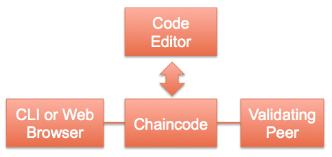
单个验证 peer 不需要共识，默认情况下使用noops插件来处理接收到的交易。这使得在开发中，开发人员能立即收到返回。
2.2.2 多验证 Peer¶
生产或测试网络需要有多个验证和非验证 peers 组成。非验证 peer 可以为验证 peer 分担像 API 请求处理或事件处理这样的压力。
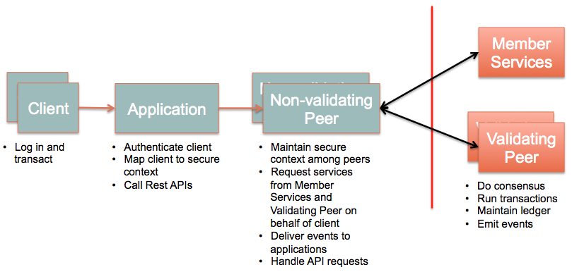
网状网络（每个验证peer需要和其它验证peer都相连）中的验证 peer 来传播信息。一个非验证 peer 连接到附近的，允许它连接的验证 peer。当应用可能直接连接到验证 peer 时，非验证 peer 是可选的。
2.2.3 多链¶
验证和非验证 peer 的各个网络组成一个链。可以根据不同的需求创建不同的链，就像根据不同的目的创建不同的 Web 站点。
3. 协议¶
fabric的点对点（peer-to-peer）通信是建立在允许双向的基于流的消息gRPC上的。它使用Protocol Buffers来序列化peer之间传输的数据结构。Protocol buffers 是语言无关，平台无关并具有可扩展机制来序列化结构化的数据的技术。数据结构，消息和服务是使用 proto3 language注释来描述的。
3.1 消息¶
消息在节点之间通过Messageproto 结构封装来传递的，可以分为 4 种类型：发现（Discovery）, 交易（Transaction）, 同步(Synchronization)和共识(Consensus)。每种类型在payload中定义了多种子类型。
message Message {
enum Type {
UNDEFINED = 0;
DISC_HELLO = 1;
DISC_DISCONNECT = 2;
DISC_GET_PEERS = 3;
DISC_PEERS = 4;
DISC_NEWMSG = 5;
CHAIN_STATUS = 6;
CHAIN_TRANSACTION = 7;
CHAIN_GET_TRANSACTIONS = 8;
CHAIN_QUERY = 9;
SYNC_GET_BLOCKS = 11;
SYNC_BLOCKS = 12;
SYNC_BLOCK_ADDED = 13;
SYNC_STATE_GET_SNAPSHOT = 14;
SYNC_STATE_SNAPSHOT = 15;
SYNC_STATE_GET_DELTAS = 16;
SYNC_STATE_DELTAS = 17;
RESPONSE = 20;
CONSENSUS = 21;
}
Type type = 1;
bytes payload = 2;
google.protobuf.Timestamp timestamp = 3;
}
payload是由不同的消息类型所包含的不同的像Transaction或Response这样的对象的不透明的字节数组。例如：type为CHAIN_TRANSACTION那么payload就是一个Transaction对象。
3.1.1 发现消息¶
在启动时，如果CORE_PEER_DISCOVERY_ROOTNODE被指定，那么 peer 就会运行发现协议。CORE_PEER_DISCOVERY_ROOTNODE是网络（任意peer）中扮演用来发现所有 peer 的起点角色的另一个 peer 的 IP 地址。协议序列以payload是一个包含：
message HelloMessage {
PeerEndpoint peerEndpoint = 1;
uint64 blockNumber = 2;
}
message PeerEndpoint {
PeerID ID = 1;
string address = 2;
enum Type {
UNDEFINED = 0;
VALIDATOR = 1;
NON_VALIDATOR = 2;
}
Type type = 3;
bytes pkiID = 4;
}
message PeerID {
string name = 1;
}
这样的端点的HelloMessage对象的DISC_HELLO消息开始的。
域的定义:
PeerID是在启动时或配置文件中定义的 peer 的任意名字PeerEndpoint描述了端点和它是验证还是非验证 peerpkiID是 peer 的加密IDaddress以ip:port这样的格式表示的 peer 的主机名或IP和端口blockNumber是 peer 的区块链的当前的高度
如果收到的DISC_HELLO 消息的块的高度比当前 peer 的块的高度高，那么它马上初始化同步协议来追上当前的网络。
DISC_HELLO之后，peer 会周期性的发送DISC_GET_PEERS来发现任意想要加入网络的 peer。收到DISC_GET_PEERS后，peer 会发送payload
包含PeerEndpoint的数组的DISC_PEERS作为响应。这是不会使用其它的发现消息类型。
3.1.2 交易消息¶
有三种不同的交易类型：部署（Deploy），调用（Invoke）和查询（Query）。部署交易向链上安装指定的链码，调用和查询交易会调用部署号的链码。另一种需要考虑的类型是创建（Create）交易，其中部署好的链码是可以在链上实例化并寻址的。这种类型在写这份文档时还没有被实现。
3.1.2.1 交易的数据结构¶
CHAIN_TRANSACTION和CHAIN_QUERY类型的消息会在payload带有Transaction对象：
message Transaction {
enum Type {
UNDEFINED = 0;
CHAINCODE_DEPLOY = 1;
CHAINCODE_INVOKE = 2;
CHAINCODE_QUERY = 3;
CHAINCODE_TERMINATE = 4;
}
Type type = 1;
string uuid = 5;
bytes chaincodeID = 2;
bytes payloadHash = 3;
ConfidentialityLevel confidentialityLevel = 7;
bytes nonce = 8;
bytes cert = 9;
bytes signature = 10;
bytes metadata = 4;
google.protobuf.Timestamp timestamp = 6;
}
message TransactionPayload {
bytes payload = 1;
}
enum ConfidentialityLevel {
PUBLIC = 0;
CONFIDENTIAL = 1;
}
域的定义:
- type - 交易的类型, 为1时表示:
- UNDEFINED - 为未来的使用所保留.
- CHAINCODE_DEPLOY - 代表部署新的链码.
- CHAINCODE_INVOKE - 代表一个链码函数被执行并修改了世界状态
- CHAINCODE_QUERY - 代表一个链码函数被执行并可能只读取了世界状态
- CHAINCODE_TERMINATE - 标记的链码不可用，所以链码中的函数将不能被调用
- chaincodeID - 链码源码，路径，构造函数和参数哈希所得到的ID
- payloadHash - TransactionPayload.payload所定义的哈希字节.
- metadata - 应用可能使用的，由自己定义的任意交易相关的元数据
- uuid - 交易的唯一ID
- timestamp - peer 收到交易时的时间戳
- confidentialityLevel - 数据保密的级别。当前有两个级别。未来可能会有多个级别。
- nonce - 为安全而使用
- cert - 交易者的证书
- signature - 交易者的签名
- TransactionPayload.payload - 交易的payload所定义的字节。由于payload可以很大，所以交易消息只包含payload的哈希
交易安全的详细信息可以在第四节找到
3.1.2.2 交易规范¶
一个交易通常会关联链码定义及其执行环境（像语言和安全上下文）的链码规范。现在，有一个使用Go语言来编写链码的实现。将来可能会添加新的语言。
message ChaincodeSpec {
enum Type {
UNDEFINED = 0;
GOLANG = 1;
NODE = 2;
}
Type type = 1;
ChaincodeID chaincodeID = 2;
ChaincodeInput ctorMsg = 3;
int32 timeout = 4;
string secureContext = 5;
ConfidentialityLevel confidentialityLevel = 6;
bytes metadata = 7;
}
message ChaincodeID {
string path = 1;
string name = 2;
}
message ChaincodeInput {
string function = 1;
repeated string args = 2;
}
域的定义:
- chaincodeID - 链码源码的路径和名字
- ctorMsg - 调用的函数名及参数
- timeout - 执行交易所需的时间（以毫秒表示）
- confidentialityLevel - 这个交易的保密级别
- secureContext - 交易者的安全上下文
- metadata - 应用想要传递下去的任何数据
当 peer 收到chaincodeSpec后以合适的交易消息包装它并广播到网络
3.1.2.3 部署交易¶
部署交易的类型是CHAINCODE_DEPLOY，且它的payload包含ChaincodeDeploymentSpec对象。
message ChaincodeDeploymentSpec {
ChaincodeSpec chaincodeSpec = 1;
google.protobuf.Timestamp effectiveDate = 2;
bytes codePackage = 3;
}
域的定义:
- chaincodeSpec - 参看上面的3.1.2.2节.
- effectiveDate - 链码准备好可被调用的时间
- codePackage - 链码源码的gzip
当验证 peer 部署链码时，它通常会校验codePackage的哈希来保证交易被部署到网络后没有被篡改。
3.1.2.4 调用交易¶
调用交易的类型是CHAINCODE_DEPLOY，且它的payload包含ChaincodeInvocationSpec对象。
message ChaincodeInvocationSpec {
ChaincodeSpec chaincodeSpec = 1;
}
3.1.2.5 查询交易¶
查询交易除了消息类型是CHAINCODE_QUERY其它和调用交易一样
3.1.3 同步消息¶
同步协议以3.1.1节描述的，当 peer 知道它自己的区块落后于其它 peer 或和它们不一样后所发起的。peer 广播SYNC_GET_BLOCKS，SYNC_STATE_GET_SNAPSHOT或SYNC_STATE_GET_DELTAS并分别接收SYNC_BLOCKS, SYNC_STATE_SNAPSHOT或 SYNC_STATE_DELTAS。
安装的共识插件（如：pbft）决定同步协议是如何被应用的。每个消息是针对具体的状态来设计的：
SYNC_GET_BLOCKS 是一个SyncBlockRange对象，包含一个连续区块的范围的payload的请求。
message SyncBlockRange {
uint64 correlationId = 1;
uint64 start = 2;
uint64 end = 3;
}
接收peer使用包含 SyncBlocks对象的payload的SYNC_BLOCKS信息来响应
message SyncBlocks {
SyncBlockRange range = 1;
repeated Block blocks = 2;
}
start和end标识包含的区块的开始和结束，返回区块的顺序由start和end的值定义。如：当start=3，end=5时区块的顺序将会是3，4，5。当start=5，end=3时区块的顺序将会是5，4，3。
SYNC_STATE_GET_SNAPSHOT 请求当前世界状态的快照。 payload是一个SyncStateSnapshotRequest对象
message SyncStateSnapshotRequest {
uint64 correlationId = 1;
}
correlationId是请求 peer 用来追踪响应消息的。接受 peer 回复payload为SyncStateSnapshot实例的SYNC_STATE_SNAPSHOT信息
message SyncStateSnapshot {
bytes delta = 1;
uint64 sequence = 2;
uint64 blockNumber = 3;
SyncStateSnapshotRequest request = 4;
}
这条消息包含快照或以0开始的快照流序列中的一块。终止消息是len(delta) == 0的块
SYNC_STATE_GET_DELTAS 请求连续区块的状态变化。默认情况下总账维护500笔交易变化。 delta(j)是block(i)和block(j)之间的状态转变，其中i=j-1。 payload包含SyncStateDeltasRequest实例
message SyncStateDeltasRequest {
SyncBlockRange range = 1;
}
接收 peer 使用包含 SyncStateDeltas实例的payload的SYNC_STATE_DELTAS信息来响应
message SyncStateDeltas {
SyncBlockRange range = 1;
repeated bytes deltas = 2;
}
delta可能以顺序（从i到j）或倒序（从j到i）来表示状态转变
3.1.4 共识消息¶
共识处理交易，一个CONSENSUS消息是由共识框架接收到CHAIN_TRANSACTION消息时在内部初始化的。框架把CHAIN_TRANSACTION转换为 CONSENSUS然后以相同的payload广播到验证 peer。共识插件接收这条消息并根据内部算法来处理。插件可能创建自定义的子类型来管理共识有穷状态机。3.4节会介绍详细信息。
3.2 总账¶
总账由两个主要的部分组成，一个是区块链，一个是世界状态。区块链是在总账中的一系列连接好的用来记录交易的区块。世界状态是一个用来存储交易执行状态的键-值(key-value)数据库
3.2.1 区块链¶
3.2.1.1 区块¶
区块链是由一个区块链表定义的，每个区块包含它在链中前一个区块的哈希。区块包含的另外两个重要信息是它包含区块执行所有交易后的交易列表和世界状态的哈希
message Block {
version = 1;
google.protobuf.Timestamp timestamp = 2;
bytes transactionsHash = 3;
bytes stateHash = 4;
bytes previousBlockHash = 5;
bytes consensusMetadata = 6;
NonHashData nonHashData = 7;
}
message BlockTransactions {
repeated Transaction transactions = 1;
}
域的定义:
version - 用来追踪协议变化的版本号
timestamp - 由区块提议者填充的时间戳
transactionsHash - 区块中交易的merkle root hash
stateHash - 世界状态的merkle root hash
previousBlockHash - 前一个区块的hash
consensusMetadata - 共识可能会引入的一些可选的元数据
nonHashData - NonHashData消息会在计算区块的哈希前设置为nil，但是在数据库中存储为区块的一部分
BlockTransactions.transactions - 交易消息的数组，由于交易的大小，它们不会被直接包含在区块中
3.2.1.2 区块哈希¶
previousBlockHash哈希是通过下面算法计算的 1. 使用protocol buffer库把区块消息序列化为字节码
- 使用FIPS 202描述的SHA3 SHAKE256算法来对序列化后的区块消息计算大小为512位的哈希值
-
transactionHash是交易merkle树的根。定义merkle tree实现是一个代办 -
stateHash在3.2.2.1节中定义.
3.2.1.3 非散列数据(NonHashData)¶
NonHashData消息是用来存储不需要所有 peer 都具有相同值的块元数据。他们是建议值。
message NonHashData {
google.protobuf.Timestamp localLedgerCommitTimestamp = 1;
repeated TransactionResult transactionResults = 2;
}
message TransactionResult {
string uuid = 1;
bytes result = 2;
uint32 errorCode = 3;
string error = 4;
}
-
localLedgerCommitTimestamp- 标识区块提交到本地总账的时间戳 -
TransactionResult- 交易结果的数组 -
TransactionResult.uuid- 交易的ID -
TransactionResult.result- 交易的返回值 -
TransactionResult.errorCode- 可以用来记录关联交易的错误信息的代码 -
TransactionResult.error- 用来记录关联交易的错误信息的字符串
3.2.1.4 交易执行¶
一个交易定义了它们部署或执行的链码。区块中的所有交易都可以在记录到总账中的区块之前运行。当链码执行时，他们可能会改变世界状态。之后世界状态的哈希会被记录在区块中。
3.2.2 世界状态¶
peer 的世界状态涉及到所有被部署的链码的状态集合。进一步说，链码的状态由键值对集合来表示。所以，逻辑上说，peer 的世界状态也是键值对的集合，其中键由元组{chaincodeID, ckey}组成。这里我们使用术语key来标识世界状态的键，如：元组{chaincodeID, ckey} ，而且我们使用cKey来标识链码中的唯一键。
为了下面描述的目的，假定chaincodeID是有效的utf8字符串，且ckey和value是一个或多个任意的字节的序列
3.2.2.1 世界状态的哈希¶
当网络活动时，很多像交易提交和同步 peer 这样的场合可能需要计算 peer 观察到的世界状态的加密-哈希。例如，共识协议可能需要保证网络中最小数量的 peer 观察到同样的世界状态。
应为计算世界状态的加密-哈希是一个非常昂贵的操作，组织世界状态来使得当它改变时能高效效的计算加密-哈希是非常可取的。将来，可以根据不同的负载条件来设计不同的组织形式。
由于fabric是被期望在不同的负载条件下都能正常工作，所以需要一个可拔插的机制来支持世界状态的组织。
3.2.2.1.1 Bucket-tree¶
Bucket-tree 是世界状态的组织方式的实现。为了下面描述的目的，世界状态的键被表示成两个组件(chaincodeID and ckey) 的通过nil字节的级联，如：key = chaincodeID+nil+cKey。
这个方法的模型是一个merkle-tree在hash table桶的顶部来计算世界状态的加密-哈希
这个方法的核心是世界状态的key-values被假定存储在由预先决定的桶的数量(numBuckets)所组成的哈希表中。一个哈希函数(hashFunction) 被用来确定包含给定键的桶数量。注意hashFunction不代表SHA3这样的加密-哈希方法，而是决定给定的键的桶的数量的正规的编程语言散列函数。
为了对 merkle-tree建模，有序桶扮演了树上的叶子节点-编号最低的桶是树中的最左边的叶子节点。为了构造树的最后第二层，叶子节点的预定义数量 (maxGroupingAtEachLevel)，从左边开始把每个这样的分组组合在一起，一个节点被当作组中所有叶子节点的共同父节点来插入到最后第二层中。注意最后的父节点的数量可能会少于maxGroupingAtEachLevel这个构造方式继续使用在更高的层级上直到树的根节点被构造。
下面这个表展示的在{numBuckets=10009 and maxGroupingAtEachLevel=10}的配置下会得到的树在不同层级上的节点数。
| Level | Number of nodes |
|---|---|
| 0 | 1 |
| 1 | 2 |
| 2 | 11 |
| 3 | 101 |
| 4 | 1001 |
| 5 | 10009 |
为了计算世界状态的加密-哈希，需要计算每个桶的加密-哈希，并假设它们是merkle-tree的叶子节点的加密-哈希。为了计算桶的加密-哈希，存储在桶中的键值对首先被序列化为字节码并在其上应用加密-哈希函数。为了序列化桶的键值对，所有具有公共chaincodeID前缀的键值对分别序列化并以chaincodeID的升序的方式追加在一起。为了序列化一个chaincodeID的键值对，会涉及到下面的信息：
- chaincodeID的长度(chaincodeID的字节数)
- chaincodeID的utf8字节码
- chaincodeID的键值对数量
- 对于每个键值对(以ckey排序)
- ckey的长度
- ckey的字节码
- 值的长度
- 值的字节码
对于上面列表的所有数值类型项（如：chaincodeID的长度），使用protobuf的变体编码方式。上面这种编码方式的目的是为了桶中的键值对的字节表示方式不会被任意其他键值对的组合所产生，并减少了序列化字节码的总体大小。
例如：考虑具有chaincodeID1_key1:value1, chaincodeID1_key2:value2, 和 chaincodeID2_key1:value1这样名字的键值对的桶。序列化后的桶看上去会像：12 + chaincodeID1 + 2 + 4 + key1 + 6 + value1 + 4 + key2 + 6 + value2 + 12 + chaincodeID2 + 1 + 4 + key1 + 6 + value1
如果桶中没有键值对，那么加密-哈希为nil。
中间节点和根节点的加密-哈希与标准merkle-tree的计算方法一样，即：应用加密-哈希函数到所有子节点的加密-哈希从左到右级联后得到的字节码。进一步说，如果一个子节点的加密-哈希为nil，那么这个子节点的加密-哈希在级联子节点的加密-哈希是就被省略。如果它只有一个子节点，那么它的加密-哈希就是子节点的加密-哈希。最后，根节点的加密-哈希就是世界状态的加密-哈希。
上面这种方法在状态中少数键值对改变时计算加密-哈希是有性能优势的。主要的优势包括：
- 那些没有变化的桶的计算会被跳过
- merkle-tree的宽度和深度可以通过配置numBuckets和maxGroupingAtEachLevel参数来控制。树的不同深度和宽度对性能和不同的资源都会产生不同的影响。
在一个具体的部署中，所有的 peer 都期望使用相同的numBuckets, maxGroupingAtEachLevel, 和 hashFunction的配置。进一步说，如果任何一个配置在之后的阶段被改变，那么这些改变需要应用到所有的 peer 中，来保证 peer 节点之间的加密-哈希的比较是有意义的。即使，这可能会导致基于实现的已有数据的迁移。例如：一种实现希望存储树中所有节点最后计算的加密-哈希，那么它就需要被重新计算。
3.3 链码（Chaincode）¶
链码是在交易（参看3.1.2节）被部署时分发到网络上，并被所有验证 peer 通过隔离的沙箱来管理的应用级代码。尽管任意的虚拟技术都可以支持沙箱，现在是通过Docker容器来运行链码的。这节中描述的协议可以启用不同虚拟实现的插入与运行。
3.3.1 虚拟机实例化¶
一个实现VM接口的虚拟机
type VM interface {
build(ctxt context.Context, id string, args []string, env []string, attachstdin bool, attachstdout bool, reader io.Reader) error
start(ctxt context.Context, id string, args []string, env []string, attachstdin bool, attachstdout bool) error
stop(ctxt context.Context, id string, timeout uint, dontkill bool, dontremove bool) error
}
fabric在处理链码上的部署交易或其他交易时，如果这个链码的VM未启动（崩溃或之前的不活动导致的关闭）时实例化VM。每个链码镜像通过build函数构建，通过start函数启动，并使用stop函数停止。
一旦链码容器被启动，它使用gRPC来连接到启动这个链码的验证 peer，并为链码上的调用和查询交易建立通道。
3.3.2 链码协议¶
验证 peer 和它的链码之间是通过gRPC流来通信的。链码容器上有shim层来处理链码与验证 peer 之间的protobuf消息协议。
message ChaincodeMessage {
enum Type {
UNDEFINED = 0;
REGISTER = 1;
REGISTERED = 2;
INIT = 3;
READY = 4;
TRANSACTION = 5;
COMPLETED = 6;
ERROR = 7;
GET_STATE = 8;
PUT_STATE = 9;
DEL_STATE = 10;
INVOKE_CHAINCODE = 11;
INVOKE_QUERY = 12;
RESPONSE = 13;
QUERY = 14;
QUERY_COMPLETED = 15;
QUERY_ERROR = 16;
RANGE_QUERY_STATE = 17;
}
Type type = 1;
google.protobuf.Timestamp timestamp = 2;
bytes payload = 3;
string uuid = 4;
}
域的定义:
- Type 是消息的类型
- payload 是消息的payload. 每个payload取决于Type.
- uuid 消息唯一的ID
消息的类型在下面的小节中描述
链码实现被验证 peer 在处理部署，调用或查询交易时调用的Chaincode接口
type Chaincode interface {
Init(stub *ChaincodeStub, function string, args []string) ([]byte, error)
Invoke(stub *ChaincodeStub, function string, args []string) (error)
Query(stub *ChaincodeStub, function string, args []string) ([]byte, error)
}
Init, Invoke 和 Query函数使用function and args参数来支持多种交易。Init是构造函数，它只在部署交易时被执行。Query函数是不允许修改链码的状态的；它只能读取和计算并以byte数组的形式返回。
3.3.2.1 链码部署¶
当部署时（链码容器已经启动），shim层发送一次性的具有包含ChaincodeID的payload的REGISTER消息给验证 peer。然后 peer 以REGISTERED或ERROR来响应成功或失败。当收到ERROR后shim关闭连接并退出。
注册之后，验证 peer 发送具有包含ChaincodeInput对象的INIT消息。shim使用从ChaincodeInput获得的参数来调用Init函数，通过像设置持久化状态这样操作来初始化链码。
shim根据Init函数的返回值，响应RESPONSE或ERROR消息。如果没有错误，那么链码初始化完成，并准备好接收调用和查询交易。
3.3.2.2 链码调用¶
当处理调用交易时，验证 peer 发送TRANSACTION消息给链码容器的shim，由它来调用链码的Invoke函数，并传递从ChaincodeInput得到的参数。shim响应RESPONSE或ERROR消息来表示函数完成。如果接收到ERROR函数，payload包含链码所产生的错误信息。
3.3.2.3 链码查询¶
与调用交易一样，验证 peer 发送QUERY消息给链码容器的shim，由它来调用链码的Query函数，并传递从ChaincodeInput得到的参数。Query函数可能会返回状态值或错误，它会把它通过RESPONSE或ERROR消息来传递给验证 peer。
3.3.2.4 链码状态¶
每个链码可能都定义了它自己的持久化状态变量。例如，一个链码可能创建电视，汽车或股票这样的资产来保存资产属性。当Invoke函数处理时，链码可能会更新状态变量，例如改变资产所有者。链码会根据下面这些消息类型类操作状态变量：
PUT_STATE¶
链码发送一个payload包含PutStateInfo对象的PU_STATE消息来保存键值对。
message PutStateInfo {
string key = 1;
bytes value = 2;
}
GET_STATE¶
链码发送一个由payload指定要获取值的键的GET_STATE消息。
DEL_STATE¶
链码发送一个由payload指定要删除值的键的DEL_STATE消息。
RANGE_QUERY_STATE¶
链码发送一个payload包含RANGE_QUERY_STATE对象的RANGE_QUERY_STATE来获取一个范围内的值。
message RangeQueryState {
string startKey = 1;
string endKey = 2;
}
startKey和endKey假设是通过字典排序的. 验证 peer 响应一个payload是RangeQueryStateResponse对象的RESPONSE消息
message RangeQueryStateResponse {
repeated RangeQueryStateKeyValue keysAndValues = 1;
bool hasMore = 2;
string ID = 3;
}
message RangeQueryStateKeyValue {
string key = 1;
bytes value = 2;
}
如果相应中hasMore=true，这表示有在请求的返回中还有另外的键。链码可以通过发送包含与响应中ID相同的ID的RangeQueryStateNext消息来获取下一集合。
message RangeQueryStateNext {
string ID = 1;
}
当链码结束读取范围，它会发送带有ID的RangeQueryStateClose消息来期望它关闭。
message RangeQueryStateClose {
string ID = 1;
}
INVOKE_CHAINCODE¶
链码可以通过发送payload包含 ChaincodeSpec对象的INVOKE_CHAINCODE消息给验证 peer 来在相同的交易上下文中调用另一个链码
QUERY_CHAINCODE¶
链码可以通过发送payload包含 ChaincodeSpec对象的QUERY_CHAINCODE消息给验证 peer 来在相同的交易上下文中查询另一个链码
3.4 插拔式共识框架¶
共识框架定义了每个共识插件都需要实现的接口：
consensus.Consenter: 允许共识插件从网络上接收消息的接口consensus.CPI: 共识编程接口_Consensus Programming Interface_ (CPI) 是共识插件用来与栈交互的，这个接口可以分为两部分：consensus.Communicator: 用来发送（广播或单播）消息到其他的验证 peerconsensus.LedgerStack: 这个接口使得执行框架像总账一样方便
就像下面描述的细节一样，consensus.LedgerStack封装了其他接口，consensus.Executor接口是共识框架的核心部分。换句话说，consensus.Executor接口允许一个（批量）交易启动，执行，根据需要回滚，预览和提交。每一个共识插件都需要满足以所有验证 peer 上全序的方式把批量（块）交易（通过consensus.Executor.CommitTxBatch）被提交到总账中（参看下面的consensus.Executor接口获得详细细节）。
当前，共识框架由consensus, controller和helper这三个包组成。使用controller和helper包的主要原因是防止Go语言的“循环引入”和当插件更新时的最小化代码变化。
controller包规范了验证 peer 所使用的共识插件helper是围绕公式插件的垫片，它是用来与剩下的栈交互的，如为其他 peer 维护消息。
这里有2个共识插件提供：pbft和noops：
obcpbft包包含实现 PBFT [1] 和 Sieve 共识协议的共识插件。参看第5节的详细介绍noops是一个为开发和测试提供的’‘假的’‘共识插件. 它处理所有共识消息但不提供共识功能，它也是一个好的学习如何开发一个共识插件的简单例子。
3.4.1 Consenter 接口¶
定义:
type Consenter interface {
RecvMsg(msg *pb.Message) error
}
Consenter接口是插件对（外部的）客户端请求的入口，当处理共识时，共识消息在内部（如从共识模块）产生。NewConsenter创建Consenter插件。RecvMsg`以到达共识的顺序来处理进来的交易。
阅读下面的helper.HandleMessage来理解 peer 是如何和这个接口来交互的。
3.4.2 CPI接口¶
定义:
type CPI interface {
Inquirer
Communicator
SecurityUtils
LedgerStack
}
CPI 允许插件和栈交互。它是由helper.Helper对象实现的。回想一下这个对象是：
- 在
helper.NewConsensusHandler被调用时初始化的 - 当它们的插件构造了
consensus.Consenter对象，那么它对插件的作者是可访问的
3.4.3 Inquirer接口¶
定义:
type Inquirer interface {
GetNetworkInfo() (self *pb.PeerEndpoint, network []*pb.PeerEndpoint, err error)
GetNetworkHandles() (self *pb.PeerID, network []*pb.PeerID, err error)
}
这个接口是consensus.CPI接口的一部分。它是用来获取网络中验证 peer 的（GetNetworkHandles）句柄，以及那些验证 peer 的明细(GetNetworkInfo)：
注意peers由pb.PeerID对象确定。这是一个protobuf消息，当前定义为（注意这个定义很可能会被修改）：
message PeerID {
string name = 1;
}
3.4.4 Communicator接口¶
定义:
type Communicator interface {
Broadcast(msg *pb.Message) error
Unicast(msg *pb.Message, receiverHandle *pb.PeerID) error
}
这个接口是consensus.CPI接口的一部分。它是用来与网络上其它 peer 通信的（helper.Broadcast, helper.Unicast）：
3.4.5 SecurityUtils接口¶
定义:
type SecurityUtils interface {
Sign(msg []byte) ([]byte, error)
Verify(peerID *pb.PeerID, signature []byte, message []byte) error
}
这个接口是consensus.CPI接口的一部分。它用来处理消息签名(Sign)的加密操作和验证签名(Verify)
3.4.6 LedgerStack 接口¶
定义:
type LedgerStack interface {
Executor
Ledger
RemoteLedgers
}
CPI接口的主要成员，LedgerStack 组与fabric的其它部分与共识相互作用，如执行交易，查询和更新总账。这个接口支持对本地区块链和状体的查询，更新本地区块链和状态，查询共识网络上其它节点的区块链和状态。它是由Executor, Ledger和RemoteLedgers这三个接口组成的。下面会描述它们。
3.4.7 Executor 接口¶
定义:
type Executor interface {
BeginTxBatch(id interface{}) error
ExecTXs(id interface{}, txs []*pb.Transaction) ([]byte, []error)
CommitTxBatch(id interface{}, transactions []*pb.Transaction, transactionsResults []*pb.TransactionResult, metadata []byte) error
RollbackTxBatch(id interface{}) error
PreviewCommitTxBatchBlock(id interface{}, transactions []*pb.Transaction, metadata []byte) (*pb.Block, error)
}
executor接口是LedgerStack接口最常使用的部分，且是共识网络工作的必要部分。接口允许交易启动，执行，根据需要回滚，预览和提交。这个接口由下面这些方法组成。
3.4.7.1 开始批量交易¶
BeginTxBatch(id interface{}) error
这个调用接受任意的，故意含糊的id，来使得共识插件可以保证与这个具体的批量相关的交易才会被执行。例如：在pbft实现中，这个id是被执行交易的编码过的哈希。
3.4.7.2 执行交易¶
ExecTXs(id interface{}, txs []*pb.Transaction) ([]byte, []error)
这个调用根据总账当前的状态接受一组交易，并返回带有对应着交易组的错误信息组的当前状态的哈希。注意一个交易所产生的错误不影响批量交易的安全提交。当遇到失败所采用的策略取决与共识插件的实现。这个接口调用多次是安全的。
3.4.7.3 提交与回滚交易¶
RollbackTxBatch(id interface{}) error
这个调用中止了批量执行。这会废弃掉对当前状态的操作，并把总账状态回归到之前的状态。批量是从BeginBatchTx开始的，如果需要开始一个新的就需要在执行任意交易之前重新创建一个。
PreviewCommitTxBatchBlock(id interface{}, transactions []*pb.Transaction, metadata []byte) (*pb.Block, error)
这个调用是共识插件对非确定性交易执行的测试时最有用的方法。区块返回的哈希表部分会保证，当CommitTxBatch被立即调用时的区块是同一个。这个保证会被任意新的交易的执行所打破。
CommitTxBatch(id interface{}, transactions []*pb.Transaction, transactionsResults []*pb.TransactionResult, metadata []byte) error
这个调用提交区块到区块链中。区块必须以全序提交到区块链中，CommitTxBatch结束批量交易，在执行或提交任意的交易之前必须先调用BeginTxBatch。
3.4.8 Ledger 接口¶
定义：
type Ledger interface {
ReadOnlyLedger
UtilLedger
WritableLedger
}
Ledger 接口是为了允许共识插件询问或可能改变区块链当前状态。它是由下面描述的三个接口组成的
3.4.8.1 ReadOnlyLedger 接口¶
定义：
type ReadOnlyLedger interface {
GetBlock(id uint64) (block *pb.Block, err error)
GetCurrentStateHash() (stateHash []byte, err error)
GetBlockchainSize() (uint64, error)
}
ReadOnlyLedger 接口是为了查询总账的本地备份，而不会修改它。它是由下面这些函数组成的。
GetBlockchainSize() (uint64, error)
这个函数返回区块链总账的长度。一般来说，这个函数永远不会失败，在这种不太可能发生情况下，错误被传递给调用者，由它确定是否需要恢复。具有最大区块值的区块的值为GetBlockchainSize()-1
注意在区块链总账的本地副本是腐坏或不完整的情况下，这个调用会返回链中最大的区块值+1。这允许节点在旧的块是腐坏或丢失的情况下能继续操作当前状态/块。
GetBlock(id uint64) (block *pb.Block, err error)
这个调用返回区块链中块的数值id。一般来说这个调用是不会失败的，除非请求的区块超出当前区块链的长度，或者底层的区块链被腐坏了。GetBlock的失败可能可以通过状态转换机制来取回它。
GetCurrentStateHash() (stateHash []byte, err error)
这个调用返回总账的当前状态的哈希。一般来说，这个函数永远不会失败，在这种不太可能发生情况下，错误被传递给调用者，由它确定是否需要恢复。
3.4.8.2 UtilLedger 接口¶
定义：
type UtilLedger interface {
HashBlock(block *pb.Block) ([]byte, error)
VerifyBlockchain(start, finish uint64) (uint64, error)
}
UtilLedger 接口定义了一些由本地总账提供的有用的功能。使用mock接口来重载这些功能在测试时非常有用。这个接口由两个函数构成。
会会
HashBlock(block *pb.Block) ([]byte, error)
尽管*pb.Block定义了GetHash方法，为了mock测试，重载这个方法会非常有用。因此，建议GetHash方法不直接调用，而是通过UtilLedger.HashBlock接口来调用这个方法。一般来说，这个函数永远不会失败，但是错误还是会传递给调用者，让它决定是否使用适当的恢复。
VerifyBlockchain(start, finish uint64) (uint64, error)
这个方法是用来校验区块链中的大的区域。它会从高的块start到低的块finish，返回第一个块的PreviousBlockHash与块的前一个块的哈希不相符的块编号以及错误信息。注意，它一般会标识最后一个好的块的编号，而不是第一个坏的块的编号。
3.4.8.3 WritableLedger 接口¶
定义：
type WritableLedger interface {
PutBlock(blockNumber uint64, block *pb.Block) error
ApplyStateDelta(id interface{}, delta *statemgmt.StateDelta) error
CommitStateDelta(id interface{}) error
RollbackStateDelta(id interface{}) error
EmptyState() error
}
WritableLedger 接口允许调用者更新区块链。注意这_NOT_ _不是_共识插件的通常用法。当前的状态需要通过Executor接口执行交易来修改，新的区块在交易提交时生成。相反的，这个接口主要是用来状态改变和腐化恢复。特别的，这个接口下的函数_永远_不能直接暴露给共识消息，这样会导致打破区块链所承诺的不可修改这一概念。这个结构包含下面这些函数。
-
PutBlock(blockNumber uint64, block *pb.Block) error
这个函数根据给定的区块编号把底层区块插入到区块链中。注意这是一个不安全的接口，所以它不会有错误返回或返回。插入一个比当前区块高度更高的区块是被允许的，同样，重写一个已经提交的区块也是被允许的。记住，由于哈希技术使得创建一个链上的更早的块是不可行的，所以这并不影响链的可审计性和不可变性。任何尝试重写区块链的历史的操作都能很容易的被侦测到。这个函数一般只用于状态转移API。
-
ApplyStateDelta(id interface{}, delta *statemgmt.StateDelta) error
这个函数接收状态变化，并把它应用到当前的状态。变化量的应用会使得状态向前或向后转变，这取决于状态变化量的构造，与`Executor`方法一样，`ApplyStateDelta`接受一个同样会被传递给`CommitStateDelta` or `RollbackStateDelta`不透明的接口`id`
-
CommitStateDelta(id interface{}) error
这个方法提交在`ApplyStateDelta`中应用的状态变化。这通常是在调用者调用`ApplyStateDelta`后通过校验由`GetCurrentStateHash()`获得的状态哈希之后调用的。这个函数接受与传递给`ApplyStateDelta`一样的`id`。
-
RollbackStateDelta(id interface{}) error
这个函数撤销在`ApplyStateDelta`中应用的状态变化量。这通常是在调用者调用`ApplyStateDelta`后与由`GetCurrentStateHash()`获得的状态哈希校验失败后调用的。这个函数接受与传递给`ApplyStateDelta`一样的`id`。
-
EmptyState() error
这个函数将会删除整个当前状态，得到原始的空状态。这通常是通过变化量加载整个新的状态时调用的。这一般只对状态转移API有用。
3.4.9 RemoteLedgers 接口¶
定义：
type RemoteLedgers interface {
GetRemoteBlocks(peerID uint64, start, finish uint64) (<-chan *pb.SyncBlocks, error)
GetRemoteStateSnapshot(peerID uint64) (<-chan *pb.SyncStateSnapshot, error)
GetRemoteStateDeltas(peerID uint64, start, finish uint64) (<-chan *pb.SyncStateDeltas, error)
}
RemoteLedgers 接口的存在主要是为了启用状态转移，和向其它副本询问区块链的状态。和WritableLedger接口一样，这不是给正常的操作使用，而是为追赶，错误恢复等操作而设计的。这个接口中的所有函数调用这都有责任来处理超时。这个接口包含下面这些函数：
-
GetRemoteBlocks(peerID uint64, start, finish uint64) (<-chan *pb.SyncBlocks, error)
这个函数尝试从由`peerID`指定的 peer 中取出由`start`和`finish`标识的范围中的`*pb.SyncBlocks`流。一般情况下，由于区块链必须是从结束到开始这样的顺序来验证的，所以`start`是比`finish`更高的块编号。由于慢速的结构，其它请求的返回可能出现在这个通道中，所以调用者必须验证返回的是期望的块。第二次以同样的`peerID`来调用这个方法会导致第一次的通道关闭。
-
GetRemoteStateSnapshot(peerID uint64) (<-chan *pb.SyncStateSnapshot, error)
这个函数尝试从由`peerID`指定的 peer 中取出`*pb.SyncStateSnapshot`流。为了应用结果，首先需要通过`WritableLedger`的`EmptyState`调用来清空存在在状态，然后顺序应用包含在流中的变化量。
-
GetRemoteStateDeltas(peerID uint64, start, finish uint64) (<-chan *pb.SyncStateDeltas, error)
这个函数尝试从由`peerID`指定的 peer 中取出由`start`和`finish`标识的范围中的`*pb.SyncStateDeltas`流。由于慢速的结构，其它请求的返回可能出现在这个通道中，所以调用者必须验证返回的是期望的块变化量。第二次以同样的`peerID`来调用这个方法会导致第一次的通道关闭。
3.4.10 controller包¶
3.4.10.1 controller.NewConsenter¶
签名:
func NewConsenter(cpi consensus.CPI) (consenter consensus.Consenter)
这个函数读取为peer过程指定的core.yaml配置文件中的peer.validator.consensus的值。键peer.validator.consensus的有效值指定运行noops还是pbft共识插件。（注意，它最终被改变为noops或custom。在custom情况下，验证 peer 将会运行由consensus/config.yaml中定义的共识插件）
插件的作者需要编辑函数体，来保证路由到它们包中正确的构造函数。例如，对于pbft 我们指向pbft.GetPlugin构造器。
这个函数是当设置返回信息处理器的consenter域时，被helper.NewConsensusHandler调用的。输入参数cpi是由helper.NewHelper构造器输出的，并实现了consensus.CPI接口
3.4.11 helper包¶
3.4.11.1 高层次概述¶
验证 peer 通过helper.NewConsesusHandler函数(一个处理器工厂)，为每个连接的 peer 建立消息处理器(helper.ConsensusHandler)。每个进来的消息都会检查它的类型(helper.HandleMessage)；如果这是为了共识必须到达的消息，它会传递到 peer 的共识对象(consensus.Consenter)。其它的信息会传递到栈中的下一个信息处理器。
3.4.11.2 helper.ConsensusHandler¶
定义：
type ConsensusHandler struct {
chatStream peer.ChatStream
consenter consensus.Consenter
coordinator peer.MessageHandlerCoordinator
done chan struct{}
peerHandler peer.MessageHandler
}
共识中的上下文，我们只关注域coordinator和consenter。coordinator就像名字隐含的那样，它被用来在 peer 的信息处理器之间做协调。例如，当 peer 希望Broadcast时，对象被访问。共识需要到达的共识者会接收到消息并处理它们。
注意，fabric/peer/peer.go定义了peer.MessageHandler (接口)，和peer.MessageHandlerCoordinator（接口）类型。
3.4.11.3 helper.NewConsensusHandler¶
签名:
func NewConsensusHandler(coord peer.MessageHandlerCoordinator, stream peer.ChatStream, initiatedStream bool, next peer.MessageHandler) (peer.MessageHandler, error)
创建一个helper.ConsensusHandler对象。为每个coordinator设置同样的消息处理器。同时把consenter设置为controller.NewConsenter(NewHelper(coord))
3.4.11.4 helper.Helper¶
定义:
type Helper struct {
coordinator peer.MessageHandlerCoordinator
}
包含验证peer的coordinator的引用。对象是否为peer实现了consensus.CPI接口。
3.4.11.5 helper.NewHelper¶
签名:
func NewHelper(mhc peer.MessageHandlerCoordinator) consensus.CPI
返回coordinator被设置为输入参数mhc（helper.ConsensusHandler消息处理器的coordinator域）的helper.Helper对象。这个对象实现了consensus.CPI接口，从而允许插件与栈进行交互。
3.4.11.6 helper.HandleMessage¶
回忆一下，helper.NewConsensusHandler返回的helper.ConsesusHandler对象实现了 peer.MessageHandler 接口：
type MessageHandler interface {
RemoteLedger
HandleMessage(msg *pb.Message) error
SendMessage(msg *pb.Message) error
To() (pb.PeerEndpoint, error)
Stop() error
}
在共识的上下文中，我们只关心HandleMessage方法。签名：
func (handler *ConsensusHandler) HandleMessage(msg *pb.Message) error
这个函数检查进来的Message的Type。有四种情况：
- 等于
pb.Message_CONSENSUS：传递给处理器的consenter.RecvMsg函数。 - 等于
pb.Message_CHAIN_TRANSACTION(如：一个外部部署的请求): 一个响应请求首先被发送给用户，然后把消息传递给consenter.RecvMsg函数 - 等于
pb.Message_CHAIN_QUERY(如：查询): 传递给helper.doChainQuery方法来在本地执行 - 其它: 传递给栈中下一个处理器的
HandleMessage方法
3.5 事件¶
事件框架提供了生产和消费预定义或自定义的事件的能力。它有3个基础组件： - 事件流 - 事件适配器 - 事件结构
3.5.1 事件流¶
事件流是用来发送和接收事件的gRPC通道。每个消费者会与事件框架建立事件流，并快速传递它感兴趣的事件。事件生成者通过事件流只发送合适的事件给连接到生产者的消费者。
事件流初始化缓冲和超时参数。缓冲保存着几个等待投递的事件，超时参数在缓冲满时有三个选项：
- 如果超时小于0，丢弃新到来的事件
- 如果超时等于0，阻塞事件知道缓冲再次可用
- 如果超时大于0，等待指定的超时时间，如果缓冲还是满的话就丢弃事件
3.5.1.1 事件生产者¶
事件生产者暴露函数Send(e *pb.Event)来发送事件，其中Event可以是预定义的Block或Generic事件。将来会定义更多的事件来包括其它的fabric元素。
message Generic {
string eventType = 1;
bytes payload = 2;
}
eventType和payload是由事件生产者任意定义的。例如，JSON数据可能被用在payload中。链码或插件发出Generic事件来与消费者通讯。
3.5.1.2 事件消费者¶
事件消费者允许外部应用监听事件。每个事件消费者通过时间流注册事件适配器。消费者框架可以看成是事件流与适配器之间的桥梁。一种典型的事件消费者使用方式：
adapter = <adapter supplied by the client application to register and receive events>
consumerClient = NewEventsClient(<event consumer address>, adapter)
consumerClient.Start()
...
...
consumerClient.Stop()
3.5.2 事件适配器¶
事件适配器封装了三种流交互的切面： - 返回所有感兴趣的事件列表的接口 - 当事件消费者框架接受到事件后调用的接口 - 当事件总线终止时，事件消费者框架会调用的接口
引用的实现提供了Golang指定语言绑定
EventAdapter interface {
GetInterestedEvents() ([]*ehpb.Interest, error)
Recv(msg *ehpb.Event) (bool,error)
Disconnected(err error)
}
把gRPC当成事件总线协议来使用，允许事件消费者框架对于不同的语言的绑定可移植而不影响事件生成者框架。
3.5.3 事件框架¶
这节详细描述了事件系统的消息结构。为了简单起见，消息直接使用Golang描述。
事件消费者和生产者之间通信的核心消息是事件。
message Event {
oneof Event {
//consumer events
Register register = 1;
//producer events
Block block = 2;
Generic generic = 3;
}
}
每一个上面的定义必须是Register, Block或Generic中的一种。
就像之前提到过的一样，消费者通过与生产者建立连接来创建事件总线，并发送Register事件。Register事件实质上是一组声明消费者感兴趣的事件的Interest消息。
message Interest {
enum ResponseType {
//don't send events (used to cancel interest)
DONTSEND = 0;
//send protobuf objects
PROTOBUF = 1;
//marshall into JSON structure
JSON = 2;
}
string eventType = 1;
ResponseType responseType = 2;
}
事件可以通过protobuf结构直接发送，也可以通过指定适当的responseType来发送JSON结构。
当前，生产者框架可以生成Block和Generic事件。Block是用来封装区块链中区块属性的消息。
4. 安全¶
这一节将讨论下面的图所展示的设置描述。特别的，系统是由下面这些实体构成的：成员管理基础架构，如从一个实体集合中区分出不同用户身份的职责（使用系统中任意形式的标识，如：信用卡，身份证），为这个用户注册开户，并生成必要的证书以便通过fabric成功的创建交易，部署或调用链码。
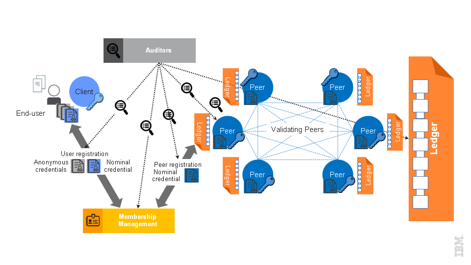
- Peers, 它们被分为验证 peer 和非验证 peer。验证 peer（也被称为验证器）是为了规范并处理（有效性检查，执行并添加到区块链中）用户消息（交易）提交到网络上。非验证 peer（也被称为 peer）代表用户接受用户交易，并通过一些基本的有效性检查，然后把交易发送到它们附近的验证 peer。peer 维护一个最新的区块链副本，只是为了做验证，而不会执行交易(处理过程也被称为交易验证)。
- 注册到我们的成员服务管理系统的终端用户是在获取被系统认定的身份的所有权之后，并将获取到的证书安装到客户端软件后，提交交易到系统。
- 客户端软件，为了之后能完成注册到我们成员服务和提交交易到系统所需要安装在客户端的软件
- 在线钱包，用户信任的用来维护他们证书的实体，并独自根据用户的请求向网络提交交易。在线钱包配置在他们自己的客户端软件中。这个软件通常是轻量级的，它只需有对自己和自己的钱包的请求做授权。也有 peer 为一些用户扮演在线钱包的角色，在接下来的会话中，对在线钱包做了详细区分。
希望使用fabric的用户，通过提供之前所讨论的身份所有权，在成员管理系统中开立一个账户，新的链码被链码创建者（开发）以开发者的形式通过客户端软件部署交易的手段，公布到区块链网络中。这样的交易是第一次被 peer 或验证器接收到，并流传到整个验证器网络中，这个交易被区块链网络执行并找到自己的位置。用户同样可以通过调用交易调用一个已经部署了的链码
下一节提供了由商业目标所驱动的安全性需求的摘要。然后我们游览一下安全组件和它们的操作，以及如何设计来满足安全需求。
4.1 商业安全需求¶
这一节表述的与fabric相关的商业安全需求。 身份和角色管理相结合
为了充分的支持实际业务的需求，有必要超越确保加密连续性来进行演进。一个可工作的B2B系统必须致力于证明/展示身份或其他属性来开展业务。商业交易和金融机构的消费交互需要明确的映射到账户的所有者。商务合同通常需要与特定的机构和/或拥有交易的其他特定性质的各方保证有从属关系。身份管理是此类系统的关键组成部分的两个原因是问责制和不可陷害的。
问责制意味着系统的用户，个人或公司，谁的胡作非为都可以追溯到并为自己的行为负责。在很多情况下，B2B系统需要它们的会员使用他们的身份（在某些形式）加入到系统中，以确保问责制的实行。问责制和不可陷害的。都是B2B系统的核心安全需求，并且他们非常相关。B2B系统需要保证系统的诚实用户不会因为其他用户的交易而被指控。
此外，一个B2B系统需要具有可再生性和灵活性，以满足参与者角色和/或从属关系的改变。
交易隐私.
B2B系统对交易的隐私有着强烈的需求，如：允许系统的终端用户控制他与环境交互和共享的信息。例如：一家企业在交易型B2B系统上开展业务，要求它的交易得其他企业不可见，而他的行业合作伙伴无权分享机密信息。
在fabric中交易隐私是通过下面非授权用户的两个属性来实现的:
-
交易匿名，交易的所有者隐藏在一个被称为匿名集的组建中，在fabric中，它是用户的一个集合。
-
交易不可关联，同一用户的两个或多个交易不能被关联起来。
根据上下文，非授权用户可以是系统以外的任何人，或用户的子集。
交易隐私与B2B系统的两个或多个成员之间的保密协议的内容强烈相关。任何授权机制的匿名性和不可关联性需要在交易时考虑。
通过身份管理协调交易隐私.
就像文档之后描述的那样，这里所采用的方法是使户隐私来协调身份管理，并使有竞争力的机构可以像下面一样在公共的区块链（用于内部和机构间交易）上快速的交易：
-
为交易添加证书来实现“有权限的”区块链
-
使用两层系统：
-
向登记的证颁发机构（CA）注册来获得(相对的) 静态登记证书 (ECerts)
-
通过交易CA获取能如实但伪匿名的代表登记用户的交易证书(TCerts).
-
提供对系统中未授权会员隐藏交易内用的机制
审计支持. 商业系统偶尔会受到审核。在这种情况下，将给予审计员检查某些交易，某组交易，系统中某些特定用户或系统自己的一些操作的手段。因此，任意与商业伙伴通过合同协议进行交易的系统都应该提供这样的能力。
4.2 使用成员管理的用户隐私¶
成员管理服务是由网络上管理用户身份和隐私的几个基础架构来组成的。这些服务验证用户的身份，在系统中注册用户，并为他/她提供所有作为可用、兼容的参数者来创建和/或调用交易所需要的证书。公告密钥体系（Public Key Infrastructure ，PKI）是一个基于不仅对公共网络上交换的数据的加密而且能确认对方身份的公共密钥加密的。PKI管理密钥和数字证书的生成，发布和废止。数字证书是用来建立用户证书，并对消息签名的。使用证书签名的消息保证信息不被篡改。典型的PKI有一个证书颁发机构（CA），一个登记机构（RA），一个证书数据库，一个证书的存储。RA是对用户进行身份验证，校验数据的合法性，提交凭据或其他证据来支持用户请求一个或多个人反映用户身份或其他属性的可信任机构。CA根据RA的建议为特定的用户发放根CA能直接或分级的认证的数字证书。另外，RA的面向用户的通信和尽职调查的责任可以看作CA的一部分。成员服务由下图展示的实体组成。整套PKI体系的引入加强了B2B系统的强度（超过，如：比特币）
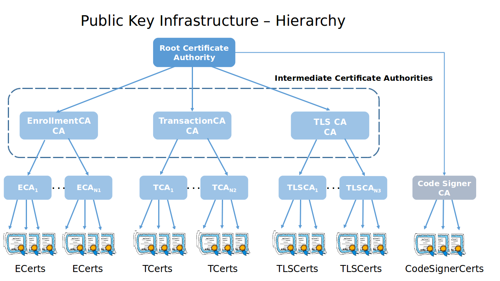
根证书颁发机构(根CA): 它代表PKI体系中的信任锚。数字证书的验证遵循信任链。根CA是PKI层次结构中最上层的CA。
登记机构(RA): 它是一个可以确定想要加入到带权限区块链的用户的有效性和身份的可信实体。它是负责与用户外的带外通信来验证他/她的身份和作用。它是负责与用户进行频外通信来验证他/她的身份和角色。它创建登记时所需要的注册证书和根信任上的信息。
注册证书颁发机构(ECA): 负责给通过提供的注册凭证验证的用户颁发注册证书(ECerts)
交易认证中心(TCA): 负责给提供了有效注册证书的用户颁发交易证书(TCerts)
TLS证书颁发机构(TLS-CA): 负责签发允许用户访问其网络的TLS证书和凭证。它验证用户提供的包含该用户的特定信息的，用来签发TLS证书的，证书或证据。
注册证书(ECerts) ECerts是长期证书。它们是颁发给所有角色的，如用户，非验证 peer，验证 peer。在给用户颁发的情况下，谁向区块链提交候选人申请谁就拥有TCerts（在下面讨论），ECerts有两种可能的结构和使用模式：
-
Model A: ECerts 包含所有者的身份/注册ID，并可以在交易中为TCert请求提供只用来对名义实体身份做验证。它们包含两个密钥对的公共部分：签名密钥对和加密/密钥协商密钥对。 ECerts是每个人都可以访问。
-
Model B: ECerts 包含所有者的身份/注册ID，并只为TCert请求提供名义实体的身份验证。它们包含一个签名密钥对的公共部分，即，签名验证公钥的公共部分。作为依赖方，ECerts最好只由TCA和审计人员访问。他们对交易是不可见的，因此（不像TCerts）签名密钥对不在这一层级发挥不可抵赖的作用。
交易证书(TCerts) TCerts是每个交易的短期证书。它们是由TCA根据授权的用户请求颁发的。它们安全的给一个交易授权，并可以被配置为隐藏谁参与了交易或选择性地暴露这样身份注册ID这样的信息。他们包含签名密钥对的公共部分，并可以被配置为包含一个密钥协议的密钥对的公共部分。他们仅颁发给用户。它们唯一的关联到所有者，它们可以被配置为这个关联只有TCA知道知道（和授权审核员）。TCert可以配置成不携带用户的身份信息。它们使得用户不仅以匿名方式参与到系统中，而且阻止了交易之间的关联性。
然而，审计能力和问责制的要求TCA能够获取给定身份的TCert，或者获取指定TCert的所有者。有关TCerts如何在部署和调用交易中使用的详细信息参见4.3节，交易安全是在基础设施层面提供的。
TCerts可容纳的加密或密钥协议的公共密钥（以及数字签名的验证公钥）。 如果配备好TCert，那么就需要注册证书不能包含加密或密钥协议的公钥。
这样的密钥协议的公钥，Key_Agreement_TCertPub_Key，可以由交易认证机构（TCA）使用与生成Signature_Verification_TCertPub_Key同样的方法，使用TCertIndex + 1 而不是TCertIndex来作为索引个值来生成，其中TCertIndex是由TCA为了恢复而隐藏在TCert中的。
交易证书（TCert）的结构如下所述： TCertID – 交易证书ID（为了避免通过隐藏的注册ID发生的意外可关联性，最好由TCA随机生成）. Hidden Enrollment ID: AES_EncryptK(enrollmentID), 其中密钥K = [HMAC(Pre-K, TCertID)]256位截断其中为每个K定义三个不同的密钥分配方案：(a)， (b) and (c)。 Hidden Private Keys Extraction: AES_EncryptTCertOwner_EncryptKey(TCertIndex || 已知的填充/校验检查向量) 其中||表示连接，其中各个批次具有被加到计数器的唯一（每个批次）的时间戳/随机偏移量（这个实现中初始化为1）来生成TCertIndex。该计数器可以通过每次增加2来适应TCA生成公钥，并由这两种类型的私钥的TCert所有者来恢复，如签名密钥对和密钥协商密钥对。 Sign Verification Public Key – TCert签名验证的公共密钥。 Key Agreement Public Key – TCert密钥协商的公钥. Validity period – 该交易证书可用于交易的外/外部签名的时间窗口。
这里至少有三种方式来配置考虑了隐藏注册ID域密钥的分配方案： (a) Pre-K在注册期间发给用户，peer 和审计员，并对TCA和授权的审计员可用。它可能，例如由Kchain派生（会在这个规范的后面描述）或为了链码的保密性使用独立的key(s)。
(b) Pre-K对验证器，TCA和授权的审计员可用。K是在验证器成功响应用户的查询交易（通过TLS）后可用给的。查询交易可以使用与调用交易相同的格式。对应下面的例1，如果查询用户又有部署交易的ACL中的一张TCert，那么就可以得到创建这个部署交易的用户的注册ID（enrollmentID）。对应下面的例2，如果查询所使用TCert的注册ID（enrollmentID）与部署交易中访问控制域的其中一个隶属关系/角色匹配，那么就可以得到创建这个部署交易的用户的注册ID（enrollmentID）。
Example 1:
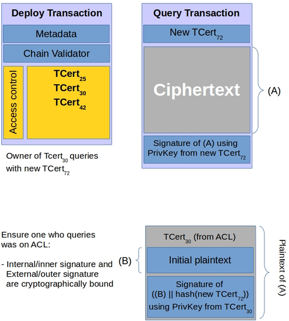
Example 2:

(c) Pre-K对TCA和授权的审计员可用。对于批量中的所有TCert，TCert特有的K可以和TCert一起分发给TCert的所有者（通过TLS）。这样就通过K的TCert所有者启用目标释放（TCert所有者的注册ID的可信通知）。这样的目标释放可以使用预定收件人的密钥协商公钥和/或PKchain其中SKchain就像规范的后面描述的那样对验证器可用。这样目标释放给其它合同的参与者也可以被纳入到这个交易或在频外完成。
如果TCert与上述的ECert模型A的结合使用，那么使用K不发送给TCert的所有者的方案（c）就足够了。 如果TCert与上述的ECert模型A的结合使用，那么TCert中的密钥协商的公钥域可能就不需要了。
交易认证中心(TCA)以批量的方式返回TCert，每个批量包含不是每个TCert都有的，但是和TCert的批量一起传递到客户端的KeyDF_Key(Key-Derivation-Function Key) （通用TLS）。KeyDF_Key允许TCert的拥有者派生出真正用于从AES_EncryptTCertOwner_EncryptKey（TCertIndex || 已知的填充/校验检查向量）的TCertIndex恢复的TCertOwner_EncryptKey。
TLS证书(TLS-Certs) TLS-Certs 是用于系统/组件到系统/组件间通讯所使用的证书。他们包含所有者的身份信息，使用是为了保证网络基本的安全。
成员管理的这个实现提供下面描述的基础功能：ECerts是没有到期/废止的；TCert的过期是由验证周期的时间窗口提供的。TCerts是没有废止的。ECA，TCA和TLS CA证书是自签名的，其中TLS CA提供信任锚点。
4.2.1 用户/客户端注册过程¶
下面这个图高度概括了用户注册过程，它具有离线和在线阶段。

离线处理: 在第一步中，每个用户/非验证 peer /验证 peer 有权在线下将较强的识别凭证（身份证明）到导入到注册机构（RA）。这需要在频外给RA提供为用户创建（存储）账号的证据凭证。第二步，RA返回对应的用户名/密码和信任锚点（这个实现中是TLS-CA Cert）给用户。如果用户访问了本地客户端，那么这是客户端可以以TLS-CA证书作为信任锚点来提供安全保障的一种方法。
在线阶段: 第三步，用户连接客户端来请求注册到系统中。用户发送它的用户名和密码给客户端。客户端代表用户发送请求给PKI框架。第四步，接受包，第五步，包含其中一些对应于由客户端私有/秘密密钥的若干证书。一旦客户端验证包中所有加密材料是正确/有效的，他就把证书存储在本地并通知用户。这时候用户注册就完成了。
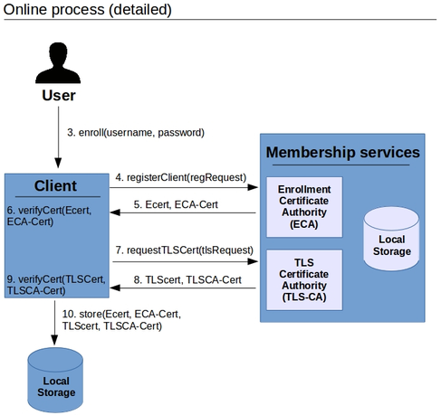
图4展示了注册的详细过程。PKI框架具有RA， ECA， TCA和TLS-CA这些实体。第一步只收，RA调用“AddEntry”函数为它的数据库输入（用户名/密码）。这时候用户已正式注册到系统数据库中。客户端需要TLS-CA证书（当作信任锚点）来验证与服务器之间的TLS握手是正确的。第四步，客户端发送包含注册公钥和像用户名，密码这样的附加身份信息的注册请求到ECA（通过TLS备案层协议）。ECA验证这个用户是否真实存在于数据库。一旦它确认用户有权限提交他/她的注册公钥，那么ECA就会验证它。这个注册信息是一次性的。ECA会更新它的数据库来标识这条注册信息（用户名，密码）不能再被使用。ECA构造，签名并送回一张包含用户注册公钥的（步骤5）注册证书（ECert）。它同样会发送将来会用到（客户端需要向TCA证明他/她的ECert使用争取的ECA创建的）的ECA证书（ECA-Cert)）。（尽管ECA-Cert在最初的实现中是自签名的，TCA，TLS-CA和ECA是共址）第六步，客户端验证ECert中的公钥是最初由客户端提交的（即ECA没有作弊）。它同样验证ECert中的所有期望的信息存在且形式正确。
同样的，在第七步，客户端发送包含它的公钥和身份的注册信息到TLS-CA。TLS-CA验证该用户在数据库中真实存在。TLS-CA生成，签名包含用户TLS公钥的一张TLS-Cert（步骤8）。TLS-CA发送TLS-Cert和它的证书（TLS-CA Cert）。第九步类似于第六步，客户端验证TLS Cert中的公钥是最初由客户端提交的，TLS Cert中的信息是完整且形式正确。在第十步，客户端在本地存储中保存这两张证书的所有证书。这时候用户就注册完成了。
在这个版本的实现中验证器的注册过程和 peer 的是一样的。尽管，不同的实现可能使得验证器直接通过在线过程来注册。


客户端: 请求TCert批量需要包含（另外计数），ECert和使用ECert私钥签名的请求（其中ECert的私钥使用本地存储获取的）
TCA为批量生成TCerts: 生成密钥派生函数的密钥，KeyDF_Key, 当作HMAC(TCA_KDF_Key, EnrollPub_Key). 为每张TCert生成公钥(使用TCertPub_Key = EnrollPub_Key + ExpansionValue G, 其中384位的ExpansionValue = HMAC(Expansion_Key, TCertIndex) 和384位的Expansion_Key = HMAC(KeyDF_Key, “2”)). 生成每个AES_EncryptTCertOwner_EncryptKey(TCertIndex || 已知的填充/校验检查向量)， 其中|| 表示连接，且TCertOwner_EncryptKey被当作[HMAC(KeyDF_Key, “1”)]派生256位截断.
客户端: 为部署，调用和查询，根据TCert来生成TCert的私钥：KeyDF_Key和ECert的私钥需要从本地存储中获取。KeyDF_Key是用来派生被当作[HMAC(KeyDF_Key, “1”)]256位截断的TCertOwner_EncryptKey；TCertOwner_EncryptKey是用来对TCert中的 AES_EncryptTCertOwner_EncryptKey(TCertIndex || 已知的填充/校验检查向量)域解密的；TCertIndex是用来派生TCert的私钥的： TCertPriv_Key = (EnrollPriv_Key + ExpansionValue)模n，其中384位的ExpansionValue = HMAC(Expansion_Key, TCertIndex)，384位的Expansion_Key = HMAC(KeyDF_Key, “2”)。
4.2.2 过期和废止证书¶
实际是支持交易证书过期的。一张交易证书能使用的时间窗是由‘validity period’标识的。实现过期支持的挑战在于系统的分布式特性。也就是说，所有验证实体必须共享相同的信息；即，与交易相关的有效期验证需要保证一致性。为了保证有效期的验证在所有的验证器间保持一致，有效期标识这一概念被引入。这个标识扮演着逻辑时钟，使得系统可以唯一识别有效期。在创世纪时，链的“当前有效期”由TCA初始化。至关重要的是，此有效期标识符给出随时间单调增加的值，这使得它规定了有效期间总次序。
对于指定类型的交易，系统交易有效周期标识是用来一起向区块链公布有效期满的。系统交易涉及已经在创世纪块被定义和作为基础设施的一部分的合同。有效周期标识是由TCA周期性的调用链码来更新的。注意，只有TCA允许更新有效期。TCA通过给定义了有效期区间的‘not-before’和‘not-after’这两个域设置合适的整数值来为每个交易证书设置有效期。
TCert过期: 在处理TCert时，验证器从状态表中读取与总账中的‘current validity period’相关的值来验证与交易相关的外部证书目前是否有效。状态表中的当前值需要落在TCert的‘not-before’和‘not-after’这两个子域所定义的区间中。如果满足，那么验证器就继续处理交易。如果当前值没有在这个区间中，那么TCert已经过期或还没生效，那么验证器就停止处理交易。
ECert过期: 注册证书与交易证书具有不同的有效期长度。
废止是由证书废止列表（CRLs）来支持的，CRLs鉴定废止的证书。CRLs的改变，增量的差异通过区块链来公布
4.3 基础设施层面提供的交易安全¶
fabric中的交易是通过提交用户-消息来引入到总账中的。就像之前章节讨论的那样，这些信息具有指定的结构，且允许用户部署新的链码，调用已经存在的链码，或查询已经存在的链码的状态。因此交易的方式被规范，公布和处理在整个系统提供的隐私和安全中起着重要的作用。
一方面我们的成员服务通过检查交易是由系统的有效用户创建的来提供验证交易的手段，为了把用户身份和交易撇清，但是在特定条件下又需要追踪特定个体的交易（执法，审计）。也就是说，成员服务提供结合用户隐私与问责制和不可抵赖性来提供交易认证机制。
另一方面，fabric的成员服务不能单独提供完整的用户活动隐私。首先fabric提供完整的隐私保护条款，隐私保护认证机制需要通过交易保密协同。很明显，如果认为链码的内容可能会泄漏创建者的信息，那么这就打破了链码创建者的隐私要求。第一小节讨论交易的保密性。
为链码的调用强制访问控制是一个重要的安全要求。fabric暴露给应用程序（例如，链码创建者）这意味着当应用利用fabric的成员服务是，需要应用自己调用访问控制。4.4节详细阐述了这一点。
重放攻击是链码安全的另一个重要方面，作为恶意用户可能复制一个之前的，已经加入到区块链中的交易，并向网络重放它来篡改它的操作。这是第4.3.3节的话题。
本节的其余部分介绍了基础设施中的安全机制是如何纳入到交易的生命周期中，并分别详细介绍每一个安全机制。
4.3.1 交易安全的生命周期¶
交易在客户端创建。客户端可以是普通的客户端，或更专用的应用，即，通过区块链处理（服务器）或调用（客户端）具体链码的软件部分。这样的应用是建立在平台（客户端）上的，并在4.4节中详细介绍。
新链码的开发者可以通过这些fabric的基础设施来新部署交易： 希望交易符合保密/安全的版本和类型 希望访问部分链码的用户有适当的（读）访问权限 链码规范 代码元数据，包含的信息需要在链码执行时传递给它（即，配置参数），和 * 附加在交易结构上的并只在应用部署链码时使用的交易元数据
具有保密限制的链码的调用和查询交易都是用类似的方式创建。交易者提供需要执行的链码的标识，要调用的函数的名称及其参数。可选的，调用者可以传递在链码执行的时候所需要提供的代码调用元数据给交易创建函数。交易元数据是调用者的应用程序或调用者本身为了它自己的目的所使用的另外一个域。
最后，交易在客户端，通过它们的创建者的证书签名，并发送给验证器网络。 验证器接受私密交易，并通过下列阶段传递它们： 预验证阶段，验证器根据根证书颁发机构来验证交易证书，验证交易（静态的）中包含交易证书签名，并验证交易是否为重放（参见，下面关于重放攻击的详细信息） Validators receive the confidential transactions, and pass them through the following phases: 共识阶段， 验证器把这笔交易加入到交易的全序列表中（最终包含在总账中） 预执行阶段， 验证交易/注册证书是否在当前的有效期中 解密交易（如果交易是加密的），并验证交易明文的形式正确（即，符合调用访问控制，包含TCert形式正确） 在当前处理块的事务中，也执行了简单的重放攻击检查。 执行阶段， (解密的) 链码和相关的代码元数据被传递给容器，并执行。 提交* 阶段， (解密的)更新的链码的状态和交易本身被提交到总账中。
4.3.2 交易保密性¶
在开发人员的要求下，交易机密性要求链码的原文，即代码，描述，是不能被未授权的实体（即，未被开发人员授权的用户或 peer）访问或推导（assuming a computational attacker）出来。对于后者，部署和调用交易的内容始终被隐藏对链码的保密需求是至关重要的。本着同样的精神，未授权方，不应该能联系链码（调用交易）与链码本身（部署交易）之间的调用关系或他们之间的调用。
任何候选的解决方案的附加要求是，满足并支持底层的成员服务的隐私和安全规定。此外，在fabric中他不应该阻止任何链码函数的调用访问控制，或在应用上实现强制的访问控制机制(参看4.4小结)。
下面提供了以用户的粒度来设置的交易机密性机制的规范。最后小结提供了一些如何在验证器的层次来扩展这个功能的方针。当前版本所支持的特性和他的安全条款可以在4.7节中找到。
目标是达到允许任意的子集实体被允许或限制访问链码的下面所展示的部分： 1. 链码函数头，即，包含在链码中函数的原型 2. 链码[调用&] 状态，即， 当一个或多个函数被调用时，连续更新的特定链码的状态。 3. 所有上面所说的
注意，这样的设计为应用提供利用fabric的成员管理基础设施和公钥基础设施来建立自己的访问控制策略和执法机制的能力。
4.3.2.1 针对用户的保密¶
为了支持细粒度的保密控制，即，为链码创建者定义的用户的子集，限制链码的明文读权限，一条绑定到单个长周期的加密密钥对的链（PKchain, SKchain）。
尽管这个密钥对的初始化是通过每条链的PKI来存储和维护的，在之后的版本中，这个限制将会去除。链（和相关的密钥对）可以由任意带有特定（管理）权限的用户通过区块链来触发（参看4.3.2.2小节）
搭建. 在注册阶段， 用户获取（像之前一样）一张注册证书，为用户ui标记为Certui，其中每个验证器vj获取的注册证书标记为Certvj。注册会给用户或验证器发放下面这些证书：
- 用户：
a. 声明并授予自己签名密钥对(spku, ssku)
b. 申明并授予他们加密密钥对(epku, esku)，
c. 获取链PKchain的加密（公共）密钥
- 验证器:
a. 声明并授予他们签名密钥对(spkv, sskv)
b. 申明并授予他们加密密钥对 (epkv, eskv)，
c. 获取链SKchain的解密（秘密）密钥
因此，注册证书包含两个密钥对的公共部分： 一个签名密钥对[为验证器标记为(spkvj,sskvj)，为用户标记为(spkui, sskui)] 和 一个加密密钥对[为验证器标记为(epkvj,eskvj)，为用户标记为(epkui, eskui)]
链，验证器和用户注册公钥是所有人都可以访问的。
除了注册证书，用户希望通过交易证书的方式匿名的参与到交易中。用户的简单交易证书ui被标记为TCertui。交易证书包含的签名密钥对的公共部分标记为(tpkui,tskui)。
下面的章节概括性的描述了如何以用户粒度的方式提供访问控制。
部署交易的结构. 下图描绘了典型的启用了保密性的部署交易的结构。
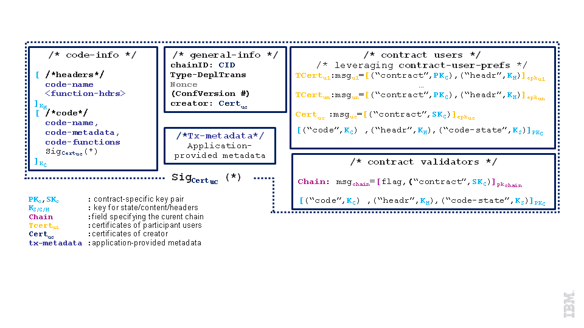
注意，部署交易由几部分组成：
基本信息部分: 包含交易管理员的详细信息，即这个交易对应于哪个链（链接的），交易的类型（设置’‘deplTrans’‘），实现的保密协议的版本号，创建者的身份（由注册证书的交易证书来表达），和主要为了防止重放攻击的Nonce。
代码信息部分: 包含链码的源码，函数头信息。就像下图所展示的那样，有一个对称密钥(KC)用于链码的源代码，另一个对称密钥(KH)用于函数原型。链码的创建者会对明文代码做签名，使得信函不能脱离交易，也不能被其他东西替代。
链验证器部分: 为了(i)解密链码的源码(KC),(ii)解密函数头，和(iii)当链码根据(KS)调用时加密状态。尤其是链码的创建者为他部署的链码生产加密密钥对(PKC, SKC)。它然后使用PKC加密所有与链码相关的密钥：
-
SKc使得用户能读取与这段链码相关的任意信息（调用，状态，等）
-
KC使用户只能读取合同代码
-
KH 使用户只能读取头信息
-
KS使用户只能读取与合同相关的状态
最后给用户发放一个合同的公钥PKc，使得他们可以根据合同加密信息，从而验证器(or any in possession of SKc)可以读取它。每个合同用户的交易证书被添加到交易中，并跟随在用户信息之后。这可以使得用户可以很容易的搜索到有他们参与的交易。注意，为了信函可以在本地不保存任何状态的情况下也能通过分析总账来获取这笔交易，部署交易也会添加信息到链码创建者uc。
整个交易由链码的创建者的证书签名，即：有信函决定使用注册还是交易证书。 两个值得注意的要点： 交易中的信息是以加密的方式存储的，即，code-functions， code-hdrs在使用TCert加密整个交易之前会用想用的TCert签名，或使用不同的TCert或ECert（如果交易的部署需要带上用户的身份。一个绑定到底层交易的载体需要包含在签名信息中，即，交易的TCert的哈希是签名的，因此mix\&match攻击是不可能的。我们在4.4节中详细讨论这样的攻击，在这种情况下，攻击者不能从他看到的交易中分离出对应的密文，即，代码信息，并在另一个交易中使用它。很明显，这样会打乱整个系统的操作，链码首先有用户A创建，现在还属于恶意用户B（可能没有权限读取它） * 为了给用户提供交叉验证的能力，会给他们访问正确密钥的权限，即给其他用户相同的密钥，使用密钥K对交易加密成密文，伴随着对K的承诺，而这一承诺值开放给所有在合同中有权访问K的用户，和链验证器。 在这种情况下，谁有权访问该密钥，谁就可以验证密钥是否正确传递给它。为了避免混乱，这部分在上图中省略了。
调用交易的结构. 下图结构化描述了，交易调用链码会触发使用用户指定的参数来执行链码中的函数
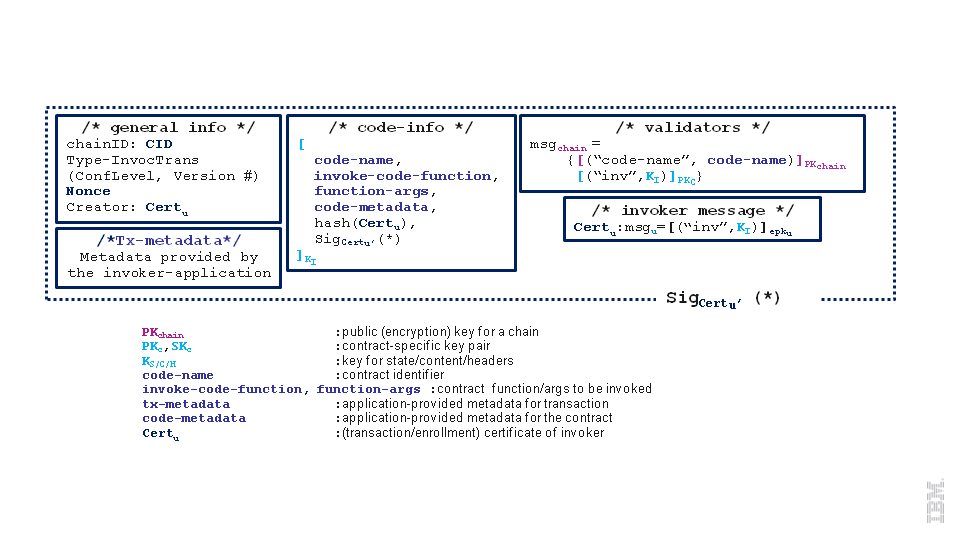
调用交易和部署交易一样由一个基本信息， 代码信息，链验证器和一个合同用户，并使用一张调用者的交易证书对所有进行签名。
-
基本信息 与部署交易中对应部分遵循相同的结构。唯一的不同是交易类型被设置为’‘InvocTx’‘，链码的标识符或名字是通过链指定的加密（公共）密钥来加密的。
-
代码信息 部署交易中的对应结构具有相同展现。在部署交易中作为代码有效载荷，现在由函数调用明细（调用函数的名字，对应的参数），由应用提供的代码元数据和交易创建者（调用者 u）的证书，TCertu。在部署交易的情况下，代码有效载荷和是通过调用者u的交易证书TCertu签名的。在部署交易的情况下，代码元数据，交易数据是由应用提供来使得信函可以实现他自己的访问控制机制和角色（详见4.4节）。
-
最后，合同用户和链验证器部分提供密钥和有效荷载是使用调用者的密钥加密的，并分别链加密密钥。在收到此类交易，验证器解密 [code-name]PKchain使用链指定的密钥SKchain ，并获取被调用的链码身份。给定的信封，验证器从本地的获取链码的解密密钥SKc，并使用他来解密链验证器的信息，使用对称密钥 KI对调用交易的有效荷载加密。给定信函，验证器解密代码信息，并使用指定的参数和附加的代码元数据（参看4.4节的代码元数据详细信息）执行链码。当链码执行后，链码的状态可能就更新了。 加密所使用的状态特定的密钥Ks在链码部署的时候就定义了。尤其是，在当前版本中Ks 和KiTx被设计成一样的（参看4.7节）。
查询交易的结构. 查询交易和调用交易具有同样的格式。唯一的区别是查询交易对链码的状态没有影响，且不需要在执行完成之后获取（解密的）并/或更新（加密的）状态。
4.3.2.2 针对验证器的保密¶
这节阐述了如何处理当前链中的不同（或子集）集合的验证器下的一些交易的执行。本节中抑制IP限制，将在接下的几个星期中进行扩展。
4.3.3 防重放攻击¶
在重放攻击中，攻击者“重放”他在网络上“窃听”或在区块链’‘看到’‘的消息 由于这样会导致整个验证实体重做计算密集型的动作（链码调用）和/或影响对应的链码的状态，同时它在攻击侧又只需要很少或没有资源，所以重放攻击在这里是一个比较大的问题。如果交易是一个支付交易，那么问题就更大了，重放可能会导致在不需要付款人的参与下，多于一次的支付。 当前系统使用以下方式来防止重放攻击： 在系统中记录交易的哈希。这个方法要求验证器为每个交易维护一个哈希日志，发布到网络上，并把每个新来的交易与本地存储的交易记录做对比。很明显这样的方法是不能扩展到大网络的，也很容易导致验证器花了比真正做交易还多的时间在检查交易是不是重放上。 利用每个用户身份维护的状态（Ethereum）.Ethereum保存一些状态，即，对每个身份/伪匿名维护他们自己的计数器（初始化为1）。每次用户使用他的身份/伪匿名发送交易是，他都把他的本地计数器加一，并把结果加入到交易中。交易随后使用用户的身份签名，并发送到网络上。当收到交易时，验证器检查计数器并与本地存储的做比较；如果值是一样的，那就增加这个身份在本地的计数器，并接受交易。否则把交易当作无效或重放的而拒绝掉。尽管这样的方法在有限个用户身份/伪匿名(即，不太多)下工作良好。它最终在用户每次交易都使用不同的标识（交易证书），用户的伪匿名与交易数量成正比时无法扩展。
其他资产管理系统，即比特币，虽然没有直接处理重放攻击，但它防止了重放。在管理（数字）资产的系统中，状态是基于每个资产来维护的，即，验证器只保存谁拥有什么的记录。因为交易的重放根据协议（因为只能由资产/硬币旧的所有者衍生出来）可以直接认为无效的，所以防重放攻击是这种方式的直接结果。尽管这合适资产管理系统，但是这并不表示在更一般的资产管理中需要比特币系统。
在fabric中，防重放攻击使用混合方法。 这就是，用户在交易中添加一个依赖于交易是匿名（通过交易证书签名）或不匿名（通过长期的注册证书签名）来生成的nonce。更具体的： * 用户通过注册证书来提交的交易需要包含nonce。其中nonce是在之前使用同一证书的交易中的nonce函数（即计数器或哈希）。包含在每张注册证书的第一次交易中的nonce可以是系统预定义的（即，包含在创始块中）或由用户指定。在第一种情况中，创世区块需要包含nonceall，即，一个固定的数字和nonce被用户与身份IDA一起用来为他的第一笔注册证书签名的交易将会
存储开销:
-
在用户侧：只有最近使用的nonce
-
在验证器侧: O(n)， 其中n是用户的数量 * 用户使用交易证书提交的交易需要包含一个随机的nonce，这样就保证两个交易不会产生同样的哈希。如果交易证书没有过期的话，验证器就向本地数据库存储这笔交易的哈希。为了防止存储大量的哈希，交易证书的有效期被利用。特别是验证器为当前或未来有效周期来维护一个接受交易哈希的更新记录。
存储开销 (这里只影响验证器): O(m)， 其中m近似于有效期内的交易和对应的有效标识的数量（见下方）
4.4 应用的访问控制功能¶
应用是抱在区块链客户端软件上的一个具有特定功能的软件。如餐桌预订。应用软件有一个版本开发商，使后者可以生成和管理一些这个应用所服务的行业所需要的链码，而且，客户端版本可以允许应用的终端用户调用这些链码。应用可以选择是否对终端用户屏蔽区块链。
本节介绍应用中如何使用链码来实现自己的访问控制策略，并提供如何使用成员服务来达到相同的目的。
这个报告可以根据应用分为调用访问控制，和读取访问控制。
4.4.1 调用访问控制¶
为了允许应用在应用层安全的实现自己的访问问控制，fabric需要提供特定的支持。在下面的章节中，我们详细的说明的fabric为了达到这个目的而给应用提供的工具，并为应用如何来使用它们使得后者能安全的执行访问控制提供方针。
来自基础设施的支持. 把链码的创建者标记为 uc，为了安全的实现应用层自己的调用访问控制，fabric必须需要提供特定的支持。 更具体的，fabric层提供下面的访问能力：
-
客户端-应用可以请求fabric使用指定的客户端拥有的交易证书或注册证书来签名和验证任何消息； 这是由Certificate Handler interface来处理的。
-
客户端-应用可以请求fabric一个绑定将身份验证数据绑定到底层的交易传输的应用程序；这是由Certificate Handler interface来处理的。
-
为了支持交易格式，允许指定被传递给链码在部署和调用时间的应用的元数据；后者被标记为代码元数据。
Certificate Handler接口允许使用底层证书的密钥对来对任意消息进行签名和验证。证书可以是TCert或ECert。
// CertificateHandler exposes methods to deal with an ECert/TCert
type CertificateHandler interface {
// GetCertificate returns the certificate's DER
GetCertificate() []byte
// Sign signs msg using the signing key corresponding to the certificate
Sign(msg []byte) ([]byte, error)
// Verify verifies msg using the verifying key corresponding to the certificate
Verify(signature []byte, msg []byte) error
// GetTransactionHandler returns a new transaction handler relative to this certificate
GetTransactionHandler() (TransactionHandler, error)
}
Transaction Handler借口允许创建交易和访问可利用的底层绑定来链接应用数据到底层交易。绑定是在网络传输协议引入的概念（参见，https://tools.ietf.org/html/rfc5056）记作通道绑定，允许应用在网络层两端的建立安全通道，与在高层的认证绑定和在低层是一样的。 这允许应用代理保护低层会话，这具有很多性能优势。 交易绑定提供识别fabric层次交易的身份，这就是应用数据要加入到总账的容器。
// TransactionHandler represents a single transaction that can be uniquely determined or identified by the output of the GetBinding method.
// This transaction is linked to a single Certificate (TCert or ECert).
type TransactionHandler interface {
// GetCertificateHandler returns the certificate handler relative to the certificate mapped to this transaction
GetCertificateHandler() (CertificateHandler, error)
// GetBinding returns a binding to the underlying transaction (container)
GetBinding() ([]byte, error)
// NewChaincodeDeployTransaction is used to deploy chaincode
NewChaincodeDeployTransaction(chaincodeDeploymentSpec *obc.ChaincodeDeploymentSpec, uuid string) (*obc.Transaction, error)
// NewChaincodeExecute is used to execute chaincode's functions
NewChaincodeExecute(chaincodeInvocation *obc.ChaincodeInvocationSpec, uuid string) (*obc.Transaction, error)
// NewChaincodeQuery is used to query chaincode's functions
NewChaincodeQuery(chaincodeInvocation *obc.ChaincodeInvocationSpec, uuid string) (*obc.Transaction, error)
}
对于版本1，绑定由hash（TCert， Nonce）组成，其中TCert是给整个交易签名的交易证书，Nonce是交易所使用的nonce。
Client接口更通用，提供之前接口实例的手段。
type Client interface {
...
// GetEnrollmentCertHandler returns a CertificateHandler whose certificate is the enrollment certificate
GetEnrollmentCertificateHandler() (CertificateHandler, error)
// GetTCertHandlerNext returns a CertificateHandler whose certificate is the next available TCert
GetTCertificateHandlerNext() (CertificateHandler, error)
// GetTCertHandlerFromDER returns a CertificateHandler whose certificate is the one passed
GetTCertificateHandlerFromDER(der []byte) (CertificateHandler, error)
}
为了向链码调用控制提供应用级别的的访问控制列表，fabric的交易和链码指定的格式需要存储在应用特定元数据的额外的域。 这个域在图1中通过元数据展示出来。这个域的内容是由应用在交易创建的时候决定的。fabric成把它当作非结构化的字节流。
message ChaincodeSpec {
...
ConfidentialityLevel confidentialityLevel;
bytes metadata;
...
}
message Transaction {
...
bytes payload;
bytes metadata;
...
}
为了帮助链码执行，在链码调用的时候，验证器为链码提供额外信息，如元数据和绑定。
应用调用访问控制. 这一节描述应用如何使用fabric提供的手段在它的链码函数上实现它自己的访问控制。 这里考虑的情况包括：
-
C: 是只包含一个函数的链码，如，被成为hello
-
uc: 是C的部署;
-
ui: 是被授权调用C的用户。用户uc希望只有ui可以调用函数hello
链码部署: 在部署的时候，uc具有被部署交易元数据的完全控制权，可硬存储一个ACL的列表（每个函数一个），或一个应用所需要的角色的列表。存储在ACL中的格式取决于部署的交易，链码需要在执行时解析元数据。 为了定义每个列表/角色，uc可以使用ui的任意TCerts/Certs（或，如果可接受，其他分配了权限或角色的用户）。把它记作TCertui。 开发者和授权用户之间的TCerts和 Certs交换实在频外渠道进行的。
假设应用的uc需要调用 hello函数，某个消息M就被授权给授权的调用者（在我们的例子中是ui）。 可以区分为以下两种情况：
-
M是链码的其中一个函数参数;
-
M是调用信息本事，如函数名，函数参数。
链码调用: 为了调用C， ui的应用需要使用TCert/ECert对M签名，用来识别ui在相关的部署交易的元数据中的参与身份。即，TCertui。更具体的，ui的客户端应用做一下步骤：
-
Certui， cHandler获取CertificateHandler
-
获取新的TransactionHandler来执行交易， txHandler相对与他的下一个有效的TCert或他的ECert
-
通过调用txHandler.getBinding()来得到txHandler的绑定
-
通过调用cHandler.Sign(‘M || txBinding’)来对‘M || txBinding’签名， sigma是签名函数的输出。
-
通过调用来发布一个新的执行交易，txHandler.NewChaincodeExecute(…). 现在， sigma可以以一个传递给函数（情形1）参数或payload的元数据段的一部分(情形2)的身份包含在交易中。
链码处理: 验证器， 从ui处接受到的执行交易将提供以下信息：
-
执行交易的绑定，他可以在验证端独立的执行；
-
执行交易的元数据(交易中的代码元数据);
-
部署交易的元数据(对应部署交易的代码元数据组建).
注意sigma是被调用函数参数的一部分，或者是存储在调用交易的代码元数据内部的（被客户端应用合理的格式化）。 应用ACL包含在代码元数据段中，在执行时同样被传递给链码。 函数hello负责检查sigma的确是通过TCertui在’M || txBinding’上的有效签名。
4.4.2 读访问控制¶
这节描述fabric基础设施如何支持应用在用户层面执行它自己的读访问控制策略。和调用访问控制的情况一样，第一部分描述了可以被应用程序为实现此目的利用的基础设施的功能，接下来介绍应用使用这些工具的方法。
为了说明这个问题，我们使用和指点一样的例子，即：
-
C: 是只包含一个函数的链码，如，被成为hello
-
uA: 是C的部署者，也被成为应用;
-
ur: 是被授权调用C的用户。用户uA希望只有ur可以读取函数hello
来自基础设施的支持. 为了让uA在应用层安全的实现自己的读取访问控制我们的基础设施需要像下面描述的那样来支持代码的部署和调用交易格式。

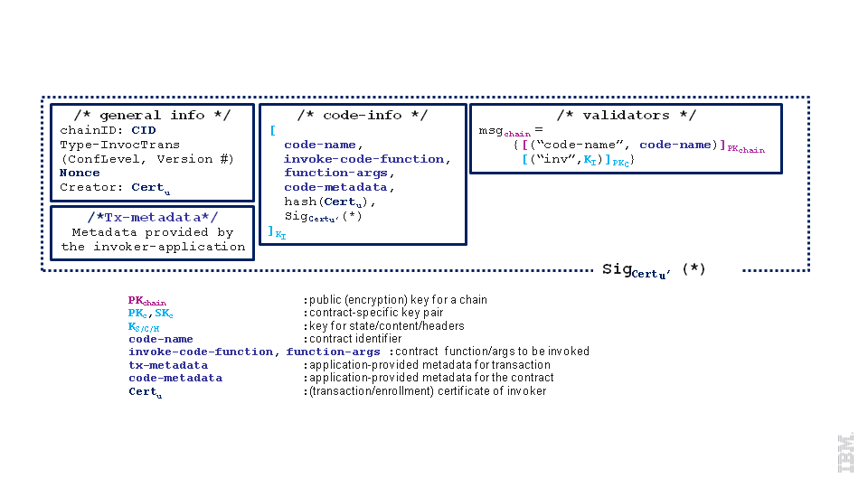
更具体的fabric层需要提供下面这些功能：
-
为数据只能通过验证（基础设施）侧解密，提供最低限度的加密功能；这意味着基础设施在我们的未来版本中应该更倾向于使用非对称加密方案来加密交易。更具体的，在链中使用在上图中标记为 Kchain 的非对称密钥对。具体参看交易保密小节
-
客户端-引用可以请求基础设施，基于客户端侧使用特定的公共加密密钥或客户端的长期解密密钥来加密/解密信息。
-
交易格式提供应用存储额外的交易元数据的能力，这些元数据可以在后者请求后传递给客户端应用。交易元数据相对于代码元数据，在执行时是没有加密或传递给链码的。因为验证器是不负责检查他们的有效性的，所以把它们当作字节列表。
应用读访问控制. 应用可以请求并获取访问用户ur的公共加密密钥，我们把它标记为PKur。可选的，ur 可能提供 uA的一张证书给应用，使应用可以利用，标记为TCertur。如：为了跟踪用户关于应用的链码的交易。TCertur和PKur实在频外渠道交换的。
部署时，应用 uA执行下面步骤：
-
使用底层基础设施来加密C的信息，应用使用PKur来访问ur。标记Cur为得到的密文。
-
(可选) Cur可以和TCertur连接
-
保密交易被构造为’‘Tx-metadata’‘来传递
在调用的时候，在 ur节点上的客户端-应用可以获取部署交易来得到C的内容。 这只需要得到相关联的部署交易的 tx-metadata域，并触发区块链基础设施客户端为Cur提供的解密函数。注意，为ur正确加密C是应用的责任。 此外，使用tx-metadata域可以一般性的满足应用需求。即，调用者可以利用调用交易的同一域来传递信息给应用的开发者。
Important Note: 要注意的是验证器在整个执行链码过程中不提供任何解密预测。 对payload解密由基础设施自己负责（以及它附近的代码元数据域）。并提供他们给部署/执行的容器。
4.5 在线钱包服务¶
这一节描述了钱包服务的安全设计，这是一个用户可以注册，移动他们的秘密材料到，办理交易的节点。 由于钱包服务是一个用户秘密材料所有权的服务，所以要杜绝没有安全授权机制的恶意钱包服务可以成功模拟客户。 因此，我们强调的是，设计一种值得信赖的，只有在代表用户的客户端同意的情况下，钱包服务才能执行交易。 这里有两种终端用户注册到在线钱包服务的情况：
-
当用户注册到注册机构并获得他/她的
<enrollID, enrollPWD>，但是没有安装客户端来触发完整的注册过程。 -
用户已经安装客户端并完成注册阶段
首先，用户与在线钱包服务交互，允许他们进行身份验证的钱包服务发布证书。即用户给定用户名和密码，其中用户名在成员服务中识别用户，标记为AccPub，密码是关联的秘密，标记为AccSec，这是由用户和服务分享的。
为了通过在线钱包服务注册，用户必须提供下面请求对象到钱包服务：
AccountRequest /* account request of u \*/
{
OBCSecCtx , /* credentials associated to network \*/
AccPub<sub>u</sub>, /* account identifier of u \*/
AccSecProof<sub>u</sub> /* proof of AccSec<sub>u</sub>\*/
}
OBCSecCtx指向用户证书，它依赖于注册过程中的阶段。可以是用户的注册ID和密码，<enrollID, enrollPWD> 或他的注册证书和关联的密钥(ECertu, sku), 其中 sku是用户签名和解密密钥的简化标记。
OBCSecCtx需要给在线钱包服务必要的信息来注册用户和发布需要的TCerts。
对于后续的请求，用户u需要提供给钱包服务的请求与虾子面这个格式类似。
TransactionRequest /* account request of u \*/
{
TxDetails, /* specifications for the new transaction \*/
AccPub<sub>u</sub>, /* account identifier of u \*/
AccSecProof<sub>u</sub> /* proof of AccSec<sub>u</sub> \*/
}
这里，TxDetails指向在线服务代表用户构造交易所需要的信息，如类型，和用户指定的交易的内容。
AccSecProofu是对应请求中剩下的域的使用共享密钥的HMAC。 Nonce-based方法与我们在fabric中一样可以防止重放攻击。
TLS连接可以用在每种服务器端认证的情况，在网络层对请求加密（保密，防止重放攻击，等）
4.6 网络安全(TLS)¶
TLS CA需要给（非验证）peer，验证器，和单独的客户端（或具有存储私钥的游览器）发放TLS证书的能力。最好，这些证书可以使用之前的类型来区分。 各个类型的CA（如TLS CA， ECA， TCA）的TLS证书有可以通过中间CA（如，一个根CA的下属CA）发放。这里没有特定流量分析的问题，任意给定的TLS连接都可以相互验证，除了请求TLS CA的TLS证书的时候。
在当前的实现中，唯一的信任锚点是TLS CA的自签名证书来适应与所有三个（共址）服务器（即TLS CA，TCA和ECA）进行通信的单个端口限制。因此，与TLS CA的TLS握手来与TLS CA建立连接，所得到的会话密钥会传递给共址的TCA和ECA。因此，TCA和ECA的自签名证书的有效性的信任继承自对TLS CA的信任。在不提高TLS CA在其他CA之上的实现中，信任锚点需要由TLS CA和其他CA都认证的根CA替代。
4.7 当前版本的限制¶
这一小节列出了当前版本的fabric的限制。 具体的关注点是客户端操作和交易保密性设计，如4.7.1和4.7.2所述。
- 客户端注册和交易的创建是由受信任不会模拟用户的非验证 peer 来完全执行。参看4.7.1节得到更多j信息。
- 链码只能被系统的成员实体访问是保密性的最低要求，即，注册到我们成员服务的验证器和用户，其它的都不能访问。后者包含可以访问到存储区域维护的总账，或者可以看到在验证器网络上公布的交易。第一个发布版本在4.7.2小节中详细介绍。
- 代码为注册CA（ECA）和交易CA（TCA）使用自签名的证书
- 防重放攻击机制还不可用
- 调用访问控制可以在应用层强制执行： 安全性的保证取决于应用对基础设施工具的正确使用。这说明如果应用忽略了fabric提供的交易绑定绑定安全交易的处理可能在存在风险。
4.7.1 简化客户端¶
客户端的注册和交易的创建是由非验证 peer 以在线钱包的角色全部执行的。
集体的，终端用户利用注册证书
4.7.2 简化交易保密¶
免责声明: 当前版本的交易保密是最小的，这被用来作为中间步骤来达到允许在未来版本中的细粒度（调用）的访问控制的执行设计。
在当前的格式，交易的保密仅仅在链层面提供，即，保存在总账中的交易内容对链的所有成员，如，验证器和用户，都是可读的。于此同时，不是系统的成员的应用审计人员，可以给予被动的观察区块链数据的手段。同时保证给予他们只是为了与被审计应用程序相关的交易。状态通过一种加密，同时不破坏底层共识网络的正常运行的方式来满足这样的审计要求
更具体的，当前使用对称密钥加密来提供交易保密性。 在这种背景下，一个最主要的挑战是特定于区块链的设置，验证器需要在区块链的状态上打成共识，即，除了交易本身，还包括个人合同或链码的状态更新。 虽然对于非机密链码这是微不足道的，对于机密链码，需要设计状态的加密机制，使得所得的密文语义安全，然而，如果明文状态是相同的那么他们就相等。
为了克服这一难题，fabric利用了密钥的层级，使用相同的密钥进行加密来降低密文数。同时，由于部分这些密钥被用于IV的生成，这使得验证方执行相同的事务时产生完全相同的密文（这是必要的，以保持不可知到底层共识算法），并通过只披露给审计实体最相关的密钥来提供控制审计的可能性。
方法描述: 成员服务为总账生成对称密钥 (Kchain)，这是在注册到区块链系统所有实体时发布的，如，客户端和验证实体已通过链的成员服务发放证书。 在注册阶段，用户获取（像之前一样）一张注册证书，为用户ui记作Certui，每个验证器vj获取它的被记作Certvj的证书。
实体注册将得到提高，如下所示。除了注册证书，用户希望以匿名方式参与交易发放交易证书。 为了简化我们把用户 ui 的交易证书记作 TCertui。 交易证书包含签名密钥对的公共部分记作 (tpkui,tskui)。
为了防止密码分析和执行保密，下面的密钥层级被用来生成和验证保密的交易： 为了提交保密交易（Tx）到总账，客户端首先选择一个nonce(N)，这是需要提交区块链的所有交易中是唯一的，并通过以Kchain作为密钥，nonce作为输入的HMAC函数生成一个交易对称密钥（KTx)）KTx= HMAC(Kchain, N)。 对于KTx，客户端生成两个AES密钥： KTxCID当作HMAC(KTx, c1), KTxP 当作 HMAC(KTx, c2)) 分别加密链码名称或标识CID和代码（或payload）P. c1, c2 是公共常量。nonce，加密的链码ID（ECID）和加密的Payload（EP）被添加到交易Tx结构中，即最终签名和认证的。 下面的图显示了如何产生用于客户端的事务的加密密钥。这张图中的剪头表示HMAC的应用，源由密钥锁定和使用在箭头中的数量作为参数。部署/调用交易的密钥键分别用d/I表示。
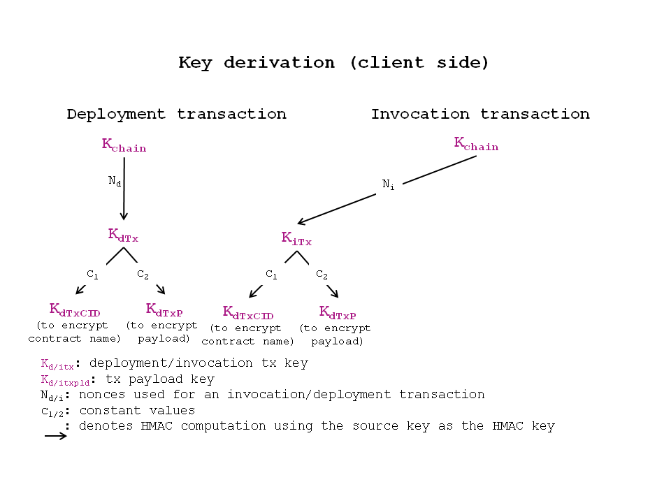
为了验证客户端提交到区块链的保密交易Tx，验证实体首先通过和之前一样的Kchain和Tx.Nonce再生成KTxCID和KTxP来解密ECID和EP。一旦链码和Payload被恢复就可以处理交易了。
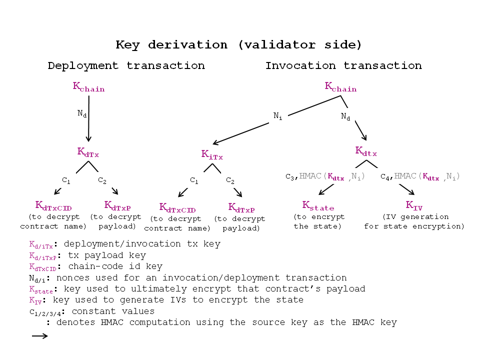
当V验证一个机密事务，相应的链码可以访问和修改链码的状态。V保持链码的状态加密。为了做到这一点，V生成如上图所示的对称密钥 。让iTX是一个之前由保密交易dTx部署的保密的交易调用一个函数（注意iTx可以是dTx本身）在这种情况下，例如，dTx具有初始化链码状态的设置函数。然后V像下面一样生成两个对称密钥KIV和Kstate：
- 计算KdTx如，对应部署交易的交易密钥和Nstate = HMAC(Kdtx ,hash(Ni))其中Ni是在调用交易中出现的nonce， hash是哈希函数
- 它设Kstate = HMAC(KdTx, c3 || Nstate)，截断用来加密底层密码； c3 是一个常数
- 它设KIV = HMAC(KdTx, c4 || Nstate); c4 是一个常数
为了加密状态变量S，验证器首先生成IV像 HMAC(KIV, crtstate)正确截断，其中 crtstate是计数器值，并在每次同样链码调用时请求状态更新时增加。当链码执行终止是计数器丢弃。IV产生之后，V认证加密（即，GSM模式）S的值连接Nstate（实际上，Nstate只需要认证而不需要加密）。在所得的密文（CT）， Nstate和IV被追加。为了解密加密状态CT|| Nstate’，验证器首次生成对称密钥KdTX‘ ,Kstate‘，然后解密CT。
IV的生成: 任何底层共识算法是不可知的，所有的验证各方需要一种方法以产生相同的确切密文。为了做到这一点，需要验证使用相同的IV。重用具有相同的对称密钥相同的IV完全打破了底层密码的安全性。因此，前面所描述的方法制备。特别是，V首先通过计算HMAC(KdTX, c4 || Nstate )派生的IV生成密钥KIV，其中c4是一个常数，并为(dTx, iTx)保存计数器crtstate初始设置为0。然后，每次必须生成一个新的密文，验证器通过计算HMAC(KIV, crtstate)作为输出生成新的IV，然后为crtstate增加1。
上述密钥层次结构的另一个好处是控制了审计的能力。 例如，当发布Kchain会提供对整个供应链的读取权限，当只为交易的(dTx，iTx)发布Kstate访问只授予由iTx更新的状态，等等
下图展示一个部署和调用交易在目前在代码中的形式。
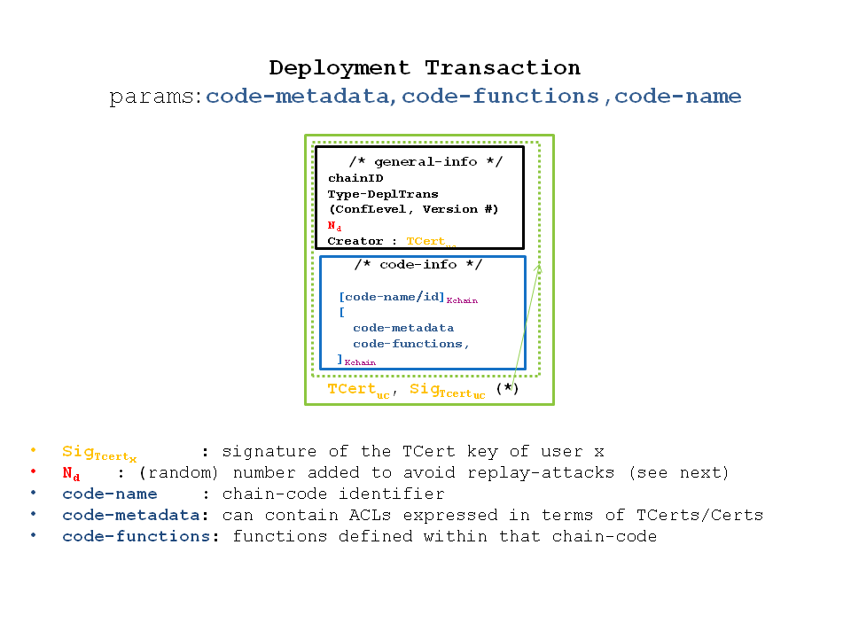
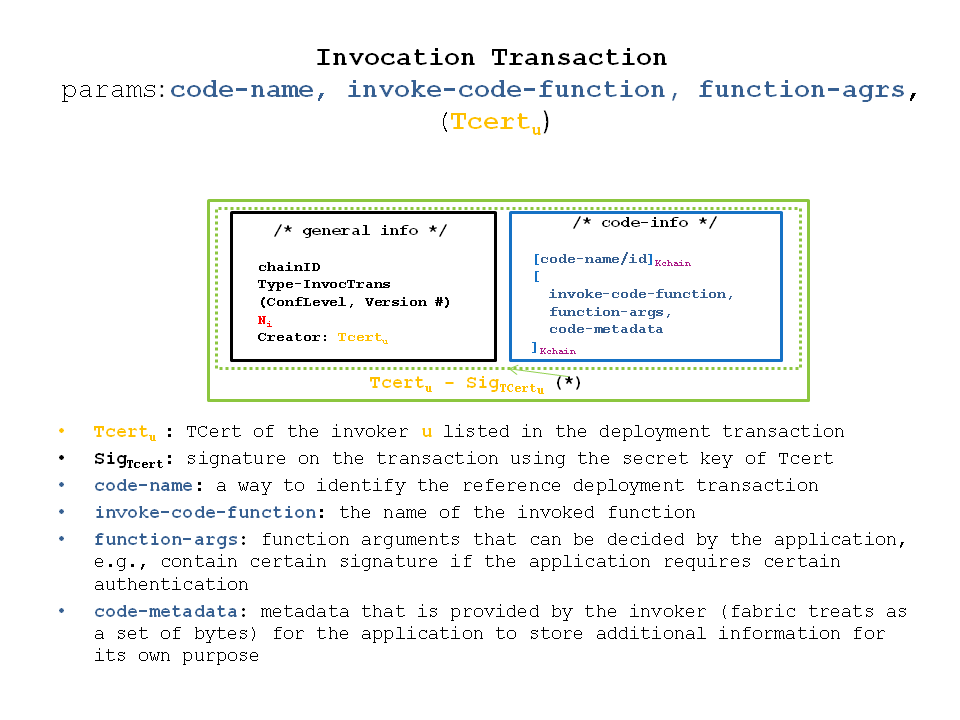
可以注意到，部署和调用交易由两部分组成：
-
基本信息部分: 包含交易管理细节，如，把这个交易链接到的（被链接到的），交易的类型（被设置为’‘deploymTx’‘或’‘invocTx’‘），保密策略实现的版本号，它的创建者标识（由TCert，Cert表达）和一个nonce（主要为了防止重放攻击）
-
代码信息部分: 包含在链码的源代码的信息。本质上是链码标识符/名称和源代码的部署交易，而对调用链码是是被调用函数名称和它的参数。就像在两张图中展示的代码信息那样他们最终是使用链指定的对称密钥Kchain加密的。
5. 拜占庭共识¶
obcpbft包是PBFT共识协议[1]的实现，其中提供了验证器之间的共识，虽然验证器的阈作为_Byzantine_，即，恶意的或不可预测的方式失败。在默认的配置中，PBFT容忍t<n/3的拜占庭验证器。
处理提供PBFT共识协议的参考实现，obcpbft 插件还包含了新颖的_Sieve_共识协议的实现。基本上Sieve背后的思想为_non-deterministic_交易提供了fabric层次的保护，这是PBFT和相似的协议没有提供的，obcpbft可以很容易配置为使用经典的PBFT或Sieve。
在默认配置中，PBFT和Sieve设计运行在至少3t +1 验证器（副本），最多容忍T个出现故障（包括恶意或拜占庭）副本。
5.1 概览¶
obcpbft插件提供实现了CPI接口的模块，他可以配置运行PBFT还是Sieve共识协议。模块化来自于，在内部，obcpbft定义了innerCPI 接口（即， inner consensus programming interface），现在包含在 pbft-core.go中。
该innerCPI接口定义的所有PBFT内部共识（这里称为core PBFT并在pbft-core.go实现）和使用core PBFT的外部共识之间的相互作用。obcpbft包包含几个core PBFT消费者实现
obc-classic.go， core PBFT周围的shim，实现了innerCPI接口并调用CPI接口;obc-batch.go，obc-classic的变种，为PBFT添加批量能力；obc-sieve.go， core PBFT消费者，实现Sieve共识协议和innerCPI接口， 调用CPI interface.
总之，除了调用发送消息给其他 peer(innerCPI.broadcast 和 innerCPI.unicast)，innerCPI接口定义了给消费者暴露的共识协议。
这使用了用来表示信息的原子投递的innerCPI.execute调用的一个经典的总序（原子）广播 API[2]。经典的总序广播在external validity checks [2]中详细讨论(innerCPI.verify)和一个功能相似的对不可靠的领导失败的检查Ω [3] (innerCPI.viewChange).
除了innerCPI， core PBFT 定义了core PBFT的方法。core PBFT最重要的方法是request有效地调用总序广播原语[2]。在下文中，我们首先概述core PBFT的方法和innerCPI接口的明细。然后，我们简要地描述，这将在更多的细节Sieve共识协议。
5.2 Core PBFT函数¶
下面的函数使用非递归锁来控制并发，因此可以从多个并行线程调用。然而，函数一般运行到完成，可能调用从CPI传入的函数。必须小心，以防止活锁。
5.2.1 newPbftCore¶
签名:
func newPbftCore(id uint64, config *viper.Viper, consumer innerCPI, ledger consensus.Ledger) *pbftCore
newPbftCore构造器使用指定的id来实例化一个新的PBFT箱子实例。config参数定义了PBFT网络的操作参数：副本数量N，检查点周期K，请求完成的超时时间，视图改变周期。
| configuration key | type | example value | description |
|---|---|---|---|
general.N |
integer | 4 | Number of replicas |
general.K |
integer | 10 | Checkpoint period |
general.timeout.request |
duration | 2s | Max delay between request reception and execution |
general.timeout.viewchange |
duration | 2s | Max delay between view-change start and next request execution |
接口中传递的consumer和ledger参数是一旦它们全部排好序后用来查询应用状态和调用应用请求的。参阅下面这些接口的相应部分。
6. 应用编程接口¶
fabric的主要接口是REST API。 REST API允许应用注册用户，查询区块链，并发布交易。 CLI为了开发，同样提供有效API的子集。CLI允许开发人员能够快速测试链码或查询交易状态。
应用程序通过REST API与非验证的 peer 节点，这将需要某种形式的认证，以确保实体有适当的权限进行交互。该应用程序是负责实现合适的身份验证机制和 peer 节点随后将使用客户身份对发出消息签名。
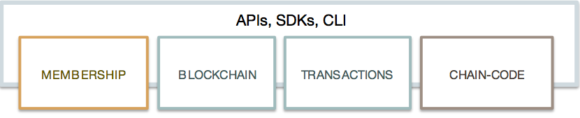
fabric API 设计涵盖的类别如下，虽然当前版本的其中一些实现不完整。[REST API（＃62-REST的API）节将说明API当前支持。
- 身份 - 注册来获得或吊销一张证书
- Address - 交易的源或目的
- Transaction - 总账上的执行单元
- Chaincode - 总账上运行的程序
- Blockchain - 总账的内容
- Network - 区块链 peer 网络的信息
- Storage - 文件或文档的外部存储
- Event Stream - 区块链上订阅/发布事件
6.1 REST Service¶
REST服务可以（通过配置）在验证和非验证 peer 被启用，但是建议在生产环境中只启用非验证 peer 的REST服务。
func StartOpenchainRESTServer(server *oc.ServerOpenchain, devops *oc.Devops)
这个函数读取core.yaml``peer处理的配置文件中的rest.address。rest.address键定义了 peer 的HTTP REST服务默认监听的地址和端口。
假定REST服务接收来已经认证的终端用户的应用请求。
6.2 REST API¶
您可以通过您所选择的任何工具与REST API的工作。例如，curl命令行实用程序或一个基于浏览器的客户端，如Firefox的REST客户端或Chrome Postman。同样，可以通过[Swagger]（http://swagger.io/）直接触发REST请求。为了获得REST API Swagger描述，点击[这里]（https://github.com/hyperledger/fabric/blob/master/core/rest/rest_api.json）。目前可用的API总结于以下部分。
6.2.1 REST Endpoints¶
- Block
- GET /chain/blocks/{block-id}
- Blockchain
- GET /chain
- Chaincode
- POST /chaincode
- Network
- GET /network/peers
- Registrar
- POST /registrar
- GET /registrar/{enrollmentID}
- DELETE /registrar/{enrollmentID}
- GET /registrar/{enrollmentID}/ecert
- GET /registrar/{enrollmentID}/tcert
- Transactions
- GET /transactions/{UUID}
6.2.1.1 块API¶
- GET /chain/blocks/{block-id}
使用块API来从区块链中检索各个块的内容。返回的块信息结构是在3.2.1.1节中定义
块检索请求:
GET host:port/chain/blocks/173
块检索响应:
{
"transactions": [
{
"type": 3,
"chaincodeID": "EgRteWNj",
"payload": "Ch4IARIGEgRteWNjGhIKBmludm9rZRIBYRIBYhICMTA=",
"uuid": "f5978e82-6d8c-47d1-adec-f18b794f570e",
"timestamp": {
"seconds": 1453758316,
"nanos": 206716775
},
"cert": "MIIB/zCCAYWgAwIBAgIBATAKBggqhkjOPQQDAzApMQswCQYDVQQGEwJVUzEMMAoGA1UEChMDSUJNMQwwCgYDVQQDEwN0Y2EwHhcNMTYwMTI1MjE0MTE3WhcNMTYwNDI0MjE0MTE3WjArMQswCQYDVQQGEwJVUzEMMAoGA1UEChMDSUJNMQ4wDAYDVQQDEwVsdWthczB2MBAGByqGSM49AgEGBSuBBAAiA2IABC/BBkt8izf6Ew8UDd62EdWFikJhyCPY5VO9Wxq9JVzt3D6nubx2jO5JdfWt49q8V1Aythia50MZEDpmKhtM6z7LHOU1RxuxdjcYDOvkNJo6pX144U4N1J8/D3A+97qZpKN/MH0wDgYDVR0PAQH/BAQDAgeAMAwGA1UdEwEB/wQCMAAwDQYDVR0OBAYEBAECAwQwDwYDVR0jBAgwBoAEAQIDBDA9BgYqAwQFBgcBAf8EMABNbPHZ0e/2EToi0H8mkouuUDwurgBYuUB+vZfeMewBre3wXG0irzMtfwHlfECRDDAKBggqhkjOPQQDAwNoADBlAjAoote5zYFv91lHzpbEwTfJL/+r+CG7oMVFUFuoSlvBSCObK2bDIbNkW4VQ+ZC9GTsCMQC5GCgy2oZdHw/x7XYzG2BiqmRkLRTiCS7vYCVJXLivU65P984HopxW0cEqeFM9co0=",
"signature": "MGUCMCIJaCT3YRsjXt4TzwfmD9hg9pxYnV13kWgf7e1hAW5Nar//05kFtpVlq83X+YtcmAIxAK0IQlCgS6nqQzZEGCLd9r7cg1AkQOT/RgoWB8zcaVjh3bCmgYHsoPAPgMsi3TJktg=="
}
],
"stateHash": "7ftCvPeHIpsvSavxUoZM0u7o67MPU81ImOJIO7ZdMoH2mjnAaAAafYy9MIH3HjrWM1/Zla/Q6LsLzIjuYdYdlQ==",
"previousBlockHash": "lT0InRg4Cvk4cKykWpCRKWDZ9YNYMzuHdUzsaeTeAcH3HdfriLEcTuxrFJ76W4jrWVvTBdI1etxuIV9AO6UF4Q==",
"nonHashData": {
"localLedgerCommitTimestamp": {
"seconds": 1453758316,
"nanos": 250834782
}
}
}
6.2.1.2 区块链API¶
- GET /chain
使用链API来检索区块链的当前状态。返回区块链信息消息被定义如下。
message BlockchainInfo {
uint64 height = 1;
bytes currentBlockHash = 2;
bytes previousBlockHash = 3;
}
-
height- 区块链中块的数量，包括创始区块 -
currentBlockHash- 当前或最后区块的哈希 -
previousBlockHash- 前一区块的哈希
区块链检索请求:
GET host:port/chain
区块链检索响应:
{
"height": 174,
"currentBlockHash": "lIfbDax2NZMU3rG3cDR11OGicPLp1yebIkia33Zte9AnfqvffK6tsHRyKwsw0hZFZkCGIa9wHVkOGyFTcFxM5w==",
"previousBlockHash": "Vlz6Dv5OSy0OZpJvijrU1cmY2cNS5Ar3xX5DxAi/seaHHRPdssrljDeppDLzGx6ZVyayt8Ru6jO+E68IwMrXLQ=="
}
6.2.1.3 链码API¶
- POST /chaincode
使用链码API来部署，调用和查询链码
部署请求需要客户端提供path参数，执行文件系统中链码的目录。部署请求的响应要么是包含成功的链码部署确认消息要么是包含失败的原因的错误。
它还含有所生成的链码的name域在消息中，这是在随后的调用和查询交易中使用的已部署链码的唯一标识。
要部署链码，需要提供ChaincodeSpec的payload，在3.1.2.2节中定义。
部署请求:
POST host:port/chaincode
{
"jsonrpc": "2.0",
"method": "deploy",
"params": {
"type": "GOLANG",
"chaincodeID":{
"path":"github.com/hyperledger/fabic/examples/chaincode/go/chaincode_example02"
},
"ctorMsg": {
"function":"init",
"args":["a", "1000", "b", "2000"]
}
},
"id": "1"
}
部署响应:
{
"jsonrpc": "2.0",
"result": {
"status": "OK",
"message": "52b0d803fc395b5e34d8d4a7cd69fb6aa00099b8fabed83504ac1c5d61a425aca5b3ad3bf96643ea4fdaac132c417c37b00f88fa800de7ece387d008a76d3586"
},
"id": 1
}
当启用安全时，修改所需的payload包括传递的登录用户注册ID的secureContext元素如下：
启用安全的部署请求:
POST host:port/chaincode
{
"jsonrpc": "2.0",
"method": "deploy",
"params": {
"type": "GOLANG",
"chaincodeID":{
"path":"github.com/hyperledger/fabic/examples/chaincode/go/chaincode_example02"
},
"ctorMsg": {
"function":"init",
"args":["a", "1000", "b", "2000"]
},
"secureContext": "lukas"
},
"id": "1"
}
该调用请求要求客户端提供一个name参数，这是之前从部署交易响应得到的。调用请求的响应要么是包含成功执行的确认消息，要么是包含失败的原因的错误。
要调用链码，需要提供ChaincodeSpec的payload，在3.1.2.2节中定义
调用请求:
POST host:port/chaincode
{
"jsonrpc": "2.0",
"method": "invoke",
"params": {
"type": "GOLANG",
"chaincodeID":{
"name":"52b0d803fc395b5e34d8d4a7cd69fb6aa00099b8fabed83504ac1c5d61a425aca5b3ad3bf96643ea4fdaac132c417c37b00f88fa800de7ece387d008a76d3586"
},
"ctorMsg": {
"function":"invoke",
"args":["a", "b", "100"]
}
},
"id": "3"
}
调用响应:
{
"jsonrpc": "2.0",
"result": {
"status": "OK",
"message": "5a4540e5-902b-422d-a6ab-e70ab36a2e6d"
},
"id": 3
}
当启用安全时，修改所需的payload包括传递的登录用户注册ID的secureContext元素如下：
启用安全的调用请求:
{
"jsonrpc": "2.0",
"method": "invoke",
"params": {
"type": "GOLANG",
"chaincodeID":{
"name":"52b0d803fc395b5e34d8d4a7cd69fb6aa00099b8fabed83504ac1c5d61a425aca5b3ad3bf96643ea4fdaac132c417c37b00f88fa800de7ece387d008a76d3586"
},
"ctorMsg": {
"function":"invoke",
"args":["a", "b", "100"]
},
"secureContext": "lukas"
},
"id": "3"
}
查询请求需要在客户端提供一个name参数，这是之前在部署交易响应中得到了。查询请求的响应取决于链码的实现。响应要么是包含成功执行的确认消息，要么是包含失败的原因的错误。在成功执行的情况下，响应将包含链码请求的状态变量的值
要查询链码，需要提供ChaincodeSpec的payload，在3.1.2.2节中定义。
查询请求:
POST host:port/chaincode/
{
"jsonrpc": "2.0",
"method": "query",
"params": {
"type": "GOLANG",
"chaincodeID":{
"name":"52b0d803fc395b5e34d8d4a7cd69fb6aa00099b8fabed83504ac1c5d61a425aca5b3ad3bf96643ea4fdaac132c417c37b00f88fa800de7ece387d008a76d3586"
},
"ctorMsg": {
"function":"query",
"args":["a"]
}
},
"id": "5"
}
查询响应:
{
"jsonrpc": "2.0",
"result": {
"status": "OK",
"message": "-400"
},
"id": 5
}
当启用安全时，修改所需的payload包括传递的登录用户注册ID的secureContext元素如下：
启用安全的查询请求:
{
"jsonrpc": "2.0",
"method": "query",
"params": {
"type": "GOLANG",
"chaincodeID":{
"name":"52b0d803fc395b5e34d8d4a7cd69fb6aa00099b8fabed83504ac1c5d61a425aca5b3ad3bf96643ea4fdaac132c417c37b00f88fa800de7ece387d008a76d3586"
},
"ctorMsg": {
"function":"query",
"args":["a"]
},
"secureContext": "lukas"
},
"id": "5"
}
6.2.1.4 网络API¶
使用网络API来获取组成区块链 fabric 的 peer 节点的网络信息
/network/peers 端点返回的目标 peer 节点的所有现有的网络连接的列表。该列表包括验证和非验证 peer。peer 的列表被返回类型PeersMessage是包含PeerEndpoint的数组，在第[3.1.1]（#311-discovery-messages发现的消息）定义。
message PeersMessage {
repeated PeerEndpoint peers = 1;
}
网络请求:
GET host:port/network/peers
网络响应:
{
"peers": [
{
"ID": {
"name": "vp1"
},
"address": "172.17.0.4:7051",
"type": 1,
"pkiID": "rUA+vX2jVCXev6JsXDNgNBMX03IV9mHRPWo6h6SI0KLMypBJLd+JoGGlqFgi+eq/"
},
{
"ID": {
"name": "vp3"
},
"address": "172.17.0.5:7051",
"type": 1,
"pkiID": "OBduaZJ72gmM+B9wp3aErQlofE0ulQfXfTHh377ruJjOpsUn0MyvsJELUTHpAbHI"
},
{
"ID": {
"name": "vp2"
},
"address": "172.17.0.6:7051",
"type": 1,
"pkiID": "GhtP0Y+o/XVmRNXGF6pcm9KLNTfCZp+XahTBqVRmaIumJZnBpom4ACayVbg4Q/Eb"
}
]
}
6.2.1.5 注册API (成员服务)¶
- POST /registrar
- GET /registrar/{enrollmentID}
- DELETE /registrar/{enrollmentID}
- GET /registrar/{enrollmentID}/ecert
- GET /registrar/{enrollmentID}/tcert
使用注册API来管理的证书颁发机构（CA）的最终用户注册。这些API端点用于注册与CA用户，确定指定用户是否已注册，并从本地存储中删除任何目标用户的登录令牌，防止他们执行任何进一步的交易。注册API也用于从系统中检索用户注册和交易证书。
/registrar端点使用与CA注册用户所需的秘密payload定义如下。注册请求的响应可以是一个成功的注册的确认或包含失败的原因的错误。
message Secret {
string enrollId = 1;
string enrollSecret = 2;
}
enrollId- 在证书颁发机构的注册IDenrollSecret- 在证书颁发机构的密码
注册请求:
POST host:port/registrar
{
"enrollId": "lukas",
"enrollSecret": "NPKYL39uKbkj"
}
注册响应:
{
"OK": "Login successful for user 'lukas'."
}
GET /registrar/{enrollmentID}端点用于确认一个给定的用户是否与CA注册如果是，确认将被反悔。否则，将导致授权错误。
注册验证请求:
GET host:port/registrar/jim
注册验证返回:
{
"OK": "User jim is already logged in."
}
注册验证请求:
GET host:port/registrar/alex
注册验证返回:
{
"Error": "User alex must log in."
}
DELETE /registrar/{enrollmentID} 端点用于删除一个目标用户的登录令牌。如果登录令牌成功删除，确认将被反悔。否则，将导致授权错误。此端点不需要payload。
删除注册请求:
DELETE host:port/registrar/lukas
删除注册返回:
{
"OK": "Deleted login token and directory for user lukas."
}
GET /registrar/{enrollmentID}/ecert
端点用于检索从本地存储给定用户的登记证书。如果目标用户已与CA注册，响应将包括注册证书的URL-encoded版本。如果目标用户尚未注册，将返回一个错误。如果客户希望使用检索后返回的注册证书，请记住，它必须是URL-decoded。
注册证书检索请求:
GET host:port/registrar/jim/ecert
注册证书检索响应:
{
"OK": "-----BEGIN+CERTIFICATE-----%0AMIIBzTCCAVSgAwIBAgIBATAKBggqhkjOPQQDAzApMQswCQYDVQQGEwJVUzEMMAoG%0AA1UEChMDSUJNMQwwCgYDVQQDEwNPQkMwHhcNMTYwMTIxMDYzNjEwWhcNMTYwNDIw%0AMDYzNjEwWjApMQswCQYDVQQGEwJVUzEMMAoGA1UEChMDSUJNMQwwCgYDVQQDEwNP%0AQkMwdjAQBgcqhkjOPQIBBgUrgQQAIgNiAARSLgjGD0omuJKYrJF5ClyYb3sGEGTU%0AH1mombSAOJ6GAOKEULt4L919sbSSChs0AEvTX7UDf4KNaKTrKrqo4khCoboMg1VS%0AXVTTPrJ%2BOxSJTXFZCohVgbhWh6ZZX2tfb7%2BjUDBOMA4GA1UdDwEB%2FwQEAwIHgDAM%0ABgNVHRMBAf8EAjAAMA0GA1UdDgQGBAQBAgMEMA8GA1UdIwQIMAaABAECAwQwDgYG%0AUQMEBQYHAQH%2FBAE0MAoGCCqGSM49BAMDA2cAMGQCMGz2RR0NsJOhxbo0CeVts2C5%0A%2BsAkKQ7v1Llbg78A1pyC5uBmoBvSnv5Dd0w2yOmj7QIwY%2Bn5pkLiwisxWurkHfiD%0AxizmN6vWQ8uhTd3PTdJiEEckjHKiq9pwD%2FGMt%2BWjP7zF%0A-----END+CERTIFICATE-----%0A"
}
/registrar/{enrollmentID}/tcert端点检索已与证书机关登记给定用户的交易证书。如果用户已注册，确认消息将包含URL-encoded交易证书的列表被返回。否则，将会导致一个错误。交易证书的所需数量由可选的’count’查询参数指定。返回交易证书的默认数量为1;500是可以与单个请求中检索证书的最大数量。如果客户端希望使用取回后的交易证书，请记住，他们必须是URL-decoded。
交易证书检索请求:
GET host:port/registrar/jim/tcert
交易证书检索响应:
{
"OK": [
"-----BEGIN+CERTIFICATE-----%0AMIIBwDCCAWagAwIBAgIBATAKBggqhkjOPQQDAzApMQswCQYDVQQGEwJVUzEMMAoG%0AA1UEChMDSUJNMQwwCgYDVQQDEwN0Y2EwHhcNMTYwMzExMjEwMTI2WhcNMTYwNjA5%0AMjEwMTI2WjApMQswCQYDVQQGEwJVUzEMMAoGA1UEChMDSUJNMQwwCgYDVQQDEwNq%0AaW0wWTATBgcqhkjOPQIBBggqhkjOPQMBBwNCAAQfwJORRED9RAsmSl%2FEowq1STBb%0A%2FoFteymZ96RUr%2BsKmF9PNrrUNvFZFhvukxZZjqhEcGiQqFyRf%2FBnVN%2BbtRzMo38w%0AfTAOBgNVHQ8BAf8EBAMCB4AwDAYDVR0TAQH%2FBAIwADANBgNVHQ4EBgQEAQIDBDAP%0ABgNVHSMECDAGgAQBAgMEMD0GBioDBAUGBwEB%2FwQwSRWQFmErr0SmQO9AFP4GJYzQ%0APQMmcsCjKiJf%2Bw1df%2FLnXunCsCUlf%2FalIUaeSrT7MAoGCCqGSM49BAMDA0gAMEUC%0AIQC%2FnE71FBJd0hwNTLXWmlCJff4Yi0J%2BnDi%2BYnujp%2Fn9nQIgYWg0m0QFzddyJ0%2FF%0AKzIZEJlKgZTt8ZTlGg3BBrgl7qY%3D%0A-----END+CERTIFICATE-----%0A"
]
}
交易证书检索请求:
GET host:port/registrar/jim/tcert?count=5
交易证书检索响应:
{
"OK": [
"-----BEGIN+CERTIFICATE-----%0AMIIBwDCCAWagAwIBAgIBATAKBggqhkjOPQQDAzApMQswCQYDVQQGEwJVUzEMMAoG%0AA1UEChMDSUJNMQwwCgYDVQQDEwN0Y2EwHhcNMTYwMzExMjEwMTI2WhcNMTYwNjA5%0AMjEwMTI2WjApMQswCQYDVQQGEwJVUzEMMAoGA1UEChMDSUJNMQwwCgYDVQQDEwNq%0AaW0wWTATBgcqhkjOPQIBBggqhkjOPQMBBwNCAARwJxVezgDcTAgj2LtTKVm65qft%0AhRTYnIOQhhOx%2B%2B2NRu5r3Kn%2FXTf1php3NXOFY8ZQbY%2FQbFAwn%2FB0O68wlHiro38w%0AfTAOBgNVHQ8BAf8EBAMCB4AwDAYDVR0TAQH%2FBAIwADANBgNVHQ4EBgQEAQIDBDAP%0ABgNVHSMECDAGgAQBAgMEMD0GBioDBAUGBwEB%2FwQwRVPMSKVcHsk4aGHxBWc8PGKj%0AqtTVTtuXnN45BynIx6lP6urpqkSuILgB1YOdRNefMAoGCCqGSM49BAMDA0gAMEUC%0AIAIjESYDp%2FXePKANGpsY3Tu%2F4A2IfeczbC3uB%2BpziltWAiEA6Stp%2FX4DmbJGgZe8%0APMNBgRKeoU6UbgTmed0ZEALLZP8%3D%0A-----END+CERTIFICATE-----%0A",
"-----BEGIN+CERTIFICATE-----%0AMIIBwDCCAWagAwIBAgIBATAKBggqhkjOPQQDAzApMQswCQYDVQQGEwJVUzEMMAoG%0AA1UEChMDSUJNMQwwCgYDVQQDEwN0Y2EwHhcNMTYwMzExMjEwMTI2WhcNMTYwNjA5%0AMjEwMTI2WjApMQswCQYDVQQGEwJVUzEMMAoGA1UEChMDSUJNMQwwCgYDVQQDEwNq%0AaW0wWTATBgcqhkjOPQIBBggqhkjOPQMBBwNCAARwJxVezgDcTAgj2LtTKVm65qft%0AhRTYnIOQhhOx%2B%2B2NRu5r3Kn%2FXTf1php3NXOFY8ZQbY%2FQbFAwn%2FB0O68wlHiro38w%0AfTAOBgNVHQ8BAf8EBAMCB4AwDAYDVR0TAQH%2FBAIwADANBgNVHQ4EBgQEAQIDBDAP%0ABgNVHSMECDAGgAQBAgMEMD0GBioDBAUGBwEB%2FwQwRVPMSKVcHsk4aGHxBWc8PGKj%0AqtTVTtuXnN45BynIx6lP6urpqkSuILgB1YOdRNefMAoGCCqGSM49BAMDA0gAMEUC%0AIAIjESYDp%2FXePKANGpsY3Tu%2F4A2IfeczbC3uB%2BpziltWAiEA6Stp%2FX4DmbJGgZe8%0APMNBgRKeoU6UbgTmed0ZEALLZP8%3D%0A-----END+CERTIFICATE-----%0A",
"-----BEGIN+CERTIFICATE-----%0AMIIBwDCCAWagAwIBAgIBATAKBggqhkjOPQQDAzApMQswCQYDVQQGEwJVUzEMMAoG%0AA1UEChMDSUJNMQwwCgYDVQQDEwN0Y2EwHhcNMTYwMzExMjEwMTI2WhcNMTYwNjA5%0AMjEwMTI2WjApMQswCQYDVQQGEwJVUzEMMAoGA1UEChMDSUJNMQwwCgYDVQQDEwNq%0AaW0wWTATBgcqhkjOPQIBBggqhkjOPQMBBwNCAARwJxVezgDcTAgj2LtTKVm65qft%0AhRTYnIOQhhOx%2B%2B2NRu5r3Kn%2FXTf1php3NXOFY8ZQbY%2FQbFAwn%2FB0O68wlHiro38w%0AfTAOBgNVHQ8BAf8EBAMCB4AwDAYDVR0TAQH%2FBAIwADANBgNVHQ4EBgQEAQIDBDAP%0ABgNVHSMECDAGgAQBAgMEMD0GBioDBAUGBwEB%2FwQwRVPMSKVcHsk4aGHxBWc8PGKj%0AqtTVTtuXnN45BynIx6lP6urpqkSuILgB1YOdRNefMAoGCCqGSM49BAMDA0gAMEUC%0AIAIjESYDp%2FXePKANGpsY3Tu%2F4A2IfeczbC3uB%2BpziltWAiEA6Stp%2FX4DmbJGgZe8%0APMNBgRKeoU6UbgTmed0ZEALLZP8%3D%0A-----END+CERTIFICATE-----%0A",
"-----BEGIN+CERTIFICATE-----%0AMIIBwDCCAWagAwIBAgIBATAKBggqhkjOPQQDAzApMQswCQYDVQQGEwJVUzEMMAoG%0AA1UEChMDSUJNMQwwCgYDVQQDEwN0Y2EwHhcNMTYwMzExMjEwMTI2WhcNMTYwNjA5%0AMjEwMTI2WjApMQswCQYDVQQGEwJVUzEMMAoGA1UEChMDSUJNMQwwCgYDVQQDEwNq%0AaW0wWTATBgcqhkjOPQIBBggqhkjOPQMBBwNCAARwJxVezgDcTAgj2LtTKVm65qft%0AhRTYnIOQhhOx%2B%2B2NRu5r3Kn%2FXTf1php3NXOFY8ZQbY%2FQbFAwn%2FB0O68wlHiro38w%0AfTAOBgNVHQ8BAf8EBAMCB4AwDAYDVR0TAQH%2FBAIwADANBgNVHQ4EBgQEAQIDBDAP%0ABgNVHSMECDAGgAQBAgMEMD0GBioDBAUGBwEB%2FwQwRVPMSKVcHsk4aGHxBWc8PGKj%0AqtTVTtuXnN45BynIx6lP6urpqkSuILgB1YOdRNefMAoGCCqGSM49BAMDA0gAMEUC%0AIAIjESYDp%2FXePKANGpsY3Tu%2F4A2IfeczbC3uB%2BpziltWAiEA6Stp%2FX4DmbJGgZe8%0APMNBgRKeoU6UbgTmed0ZEALLZP8%3D%0A-----END+CERTIFICATE-----%0A",
"-----BEGIN+CERTIFICATE-----%0AMIIBwDCCAWagAwIBAgIBATAKBggqhkjOPQQDAzApMQswCQYDVQQGEwJVUzEMMAoG%0AA1UEChMDSUJNMQwwCgYDVQQDEwN0Y2EwHhcNMTYwMzExMjEwMTI2WhcNMTYwNjA5%0AMjEwMTI2WjApMQswCQYDVQQGEwJVUzEMMAoGA1UEChMDSUJNMQwwCgYDVQQDEwNq%0AaW0wWTATBgcqhkjOPQIBBggqhkjOPQMBBwNCAARwJxVezgDcTAgj2LtTKVm65qft%0AhRTYnIOQhhOx%2B%2B2NRu5r3Kn%2FXTf1php3NXOFY8ZQbY%2FQbFAwn%2FB0O68wlHiro38w%0AfTAOBgNVHQ8BAf8EBAMCB4AwDAYDVR0TAQH%2FBAIwADANBgNVHQ4EBgQEAQIDBDAP%0ABgNVHSMECDAGgAQBAgMEMD0GBioDBAUGBwEB%2FwQwRVPMSKVcHsk4aGHxBWc8PGKj%0AqtTVTtuXnN45BynIx6lP6urpqkSuILgB1YOdRNefMAoGCCqGSM49BAMDA0gAMEUC%0AIAIjESYDp%2FXePKANGpsY3Tu%2F4A2IfeczbC3uB%2BpziltWAiEA6Stp%2FX4DmbJGgZe8%0APMNBgRKeoU6UbgTmed0ZEALLZP8%3D%0A-----END+CERTIFICATE-----%0A"
]
}
6.2.1.6 交易API¶
- GET /transactions/{UUID}
使用交易API来从区块链中检索匹配UUID的单个交易。返回的交易消息在3.1.2.1小节定义
交易检索请求:
GET host:port/transactions/f5978e82-6d8c-47d1-adec-f18b794f570e
交易检索响应:
{
"type": 3,
"chaincodeID": "EgRteWNj",
"payload": "Ch4IARIGEgRteWNjGhIKBmludm9rZRIBYRIBYhICMTA=",
"uuid": "f5978e82-6d8c-47d1-adec-f18b794f570e",
"timestamp": {
"seconds": 1453758316,
"nanos": 206716775
},
"cert": "MIIB/zCCAYWgAwIBAgIBATAKBggqhkjOPQQDAzApMQswCQYDVQQGEwJVUzEMMAoGA1UEChMDSUJNMQwwCgYDVQQDEwN0Y2EwHhcNMTYwMTI1MjE0MTE3WhcNMTYwNDI0MjE0MTE3WjArMQswCQYDVQQGEwJVUzEMMAoGA1UEChMDSUJNMQ4wDAYDVQQDEwVsdWthczB2MBAGByqGSM49AgEGBSuBBAAiA2IABC/BBkt8izf6Ew8UDd62EdWFikJhyCPY5VO9Wxq9JVzt3D6nubx2jO5JdfWt49q8V1Aythia50MZEDpmKhtM6z7LHOU1RxuxdjcYDOvkNJo6pX144U4N1J8/D3A+97qZpKN/MH0wDgYDVR0PAQH/BAQDAgeAMAwGA1UdEwEB/wQCMAAwDQYDVR0OBAYEBAECAwQwDwYDVR0jBAgwBoAEAQIDBDA9BgYqAwQFBgcBAf8EMABNbPHZ0e/2EToi0H8mkouuUDwurgBYuUB+vZfeMewBre3wXG0irzMtfwHlfECRDDAKBggqhkjOPQQDAwNoADBlAjAoote5zYFv91lHzpbEwTfJL/+r+CG7oMVFUFuoSlvBSCObK2bDIbNkW4VQ+ZC9GTsCMQC5GCgy2oZdHw/x7XYzG2BiqmRkLRTiCS7vYCVJXLivU65P984HopxW0cEqeFM9co0=",
"signature": "MGUCMCIJaCT3YRsjXt4TzwfmD9hg9pxYnV13kWgf7e1hAW5Nar//05kFtpVlq83X+YtcmAIxAK0IQlCgS6nqQzZEGCLd9r7cg1AkQOT/RgoWB8zcaVjh3bCmgYHsoPAPgMsi3TJktg=="
}
6.3 CLI¶
CLI包括可用的API的一个子集，使开发人员能够快速测试和调试链码或查询交易状态。CLI由Golang实现和可在多个操作系统上操作。当前可用的CLI命令归纳在下面的部分：
6.3.1 CLI命令¶
To see what CLI commands are currently available in the implementation, execute the following:
要查看当前可用的CLI命令，执行如下命令
cd $GOPATH/src/github.com/hyperledger/fabic/peer
./peer
你可以获得和下面类似的响应：
Usage:
peer [command]
Available Commands:
peer Run the peer.
status Status of the peer.
stop Stop the peer.
login Login user on CLI.
vm VM functionality on the fabric.
chaincode chaincode specific commands.
help Help about any command
Flags:
-h, --help[=false]: help
Use "peer [command] --help" for more information about a command.
Some of the available command line arguments for the peer command are listed below:
-
-c- 构造函数: 用来为部署触发初始化链码状态的函数 -
-l- 语言: 指定链码的实现语言，目前只支持Golang -
-n- 名字: 部署交易返回的链码的标识。在后续的调用和查询交易中必须使用 -
-p- 路径: 链码在本地文件系统中的标识。在部署交易时必须提供。 -
-u- 用户名: 调用交易的登入的用户的注册ID
上述所有命令并非完全在当前版本中实现。如下所述全面支持的命令是有助于链码的开发和调试的。
所有 peer 节点的设置都被列在core.yaml这个peer处理的配置文件中，可能通过命令行的环境变量而被修改。如，设置peer.id或 peer.ddressAutoDetect，只需要传递CORE_PEER_ID=vp1和CORE_PEER_ADDRESSAUTODETECT=true给命令行。
6.3.1.1 peer¶
peerCLI命令在开发和生产环境中都会执行 peer 处理。开发模式会在本地运行单个 peer 节点和本地的链码部署。这使得在链码开修改和调试代码，不需要启动一个完整的网络。在开发模式启动 peer 的一个例子：
./peer peer --peer-chaincodedev
在生产环境中启动peer进程，像下面一样修改上面的命令：
./peer peer
6.3.1.2 登录¶
登录的CLI命令会登入一个已经在CA注册的用户。要通过CLI登录，发出以下命令，其中username是注册用户的注册ID。
./peer login <username>
下面的例子演示了用户jim登录过程。
./peer login jim
该命令会提示输入密码，密码必须为此用户使用证书颁发机构注册登记的密码相匹配。如果输入的密码不正确的密码匹配，将导致一个错误。
22:21:31.246 [main] login -> INFO 001 CLI client login...
22:21:31.247 [main] login -> INFO 002 Local data store for client loginToken: /var/hyperledger/production/client/
Enter password for user 'jim': ************
22:21:40.183 [main] login -> INFO 003 Logging in user 'jim' on CLI interface...
22:21:40.623 [main] login -> INFO 004 Storing login token for user 'jim'.
22:21:40.624 [main] login -> INFO 005 Login successful for user 'jim'.
您也可以与-p参数来提供用户的密码。下面是一个例子。
./peer login jim -p 123456
6.3.1.3 链码部署¶
deployCLI命令为链码和接下来的部署包到验证 peer 创建 docker 镜像。如下面的例子。
./peer chaincode deploy -p github.com/hyperledger/fabric/example/chaincode/go/chaincode_example02 -c '{"Function":"init", "Args": ["a","100", "b", "200"]}'
启用安全性时，命令必须修改来通过-u参数传递用户登录的注册ID。下面是一个例子
./peer chaincode deploy -u jim -p github.com/hyperledger/fabric/example/chaincode/go/chaincode_example02 -c '{"Function":"init", "Args": ["a","100", "b", "200"]}'
6.3.1.4 链码调用¶
invokeCLI命令执行目标来代码中的指定函数。如下：
./peer chaincode invoke -n <name_value_returned_from_deploy_command> -c '{"Function": "invoke", "Args": ["a", "b", "10"]}'
启用安全性时，命令必须修改来通过-u参数传递用户登录的注册ID。下面是一个例子
./peer chaincode invoke -u jim -n <name_value_returned_from_deploy_command> -c '{"Function": "invoke", "Args": ["a", "b", "10"]}'
6.3.1.5 链码查询¶
queryCLI命令在目标链码上触发指定的查询。返回的响应取决于链码实现。下面是一个例子。
./peer chaincode query -l golang -n <name_value_returned_from_deploy_command> -c '{"Function": "query", "Args": ["a"]}'
启用安全性时，命令必须修改来通过-u参数传递用户登录的注册ID。下面是一个例子
./peer chaincode query -u jim -l golang -n <name_value_returned_from_deploy_command> -c '{"Function": "query", "Args": ["a"]}'
7. 应用模型¶
7.1 应用的组成¶
 |
一个遵循MVC-B架构的应用– Model, View, Control, BlockChain.
例如，使用 Node.js 的一个 Bluemix PaaS 的应用程序可能有一个 Web 前端用户界面或与 Cloudant 数据服务后端模型中的原生移动应用。控制逻辑可以被 1 或多个链码交互以处理对区块链交易。 |